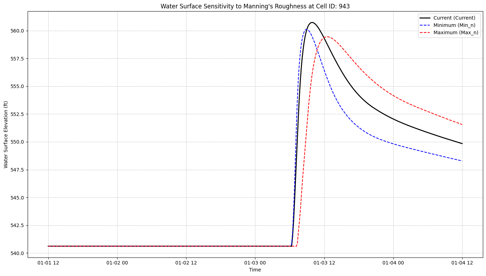
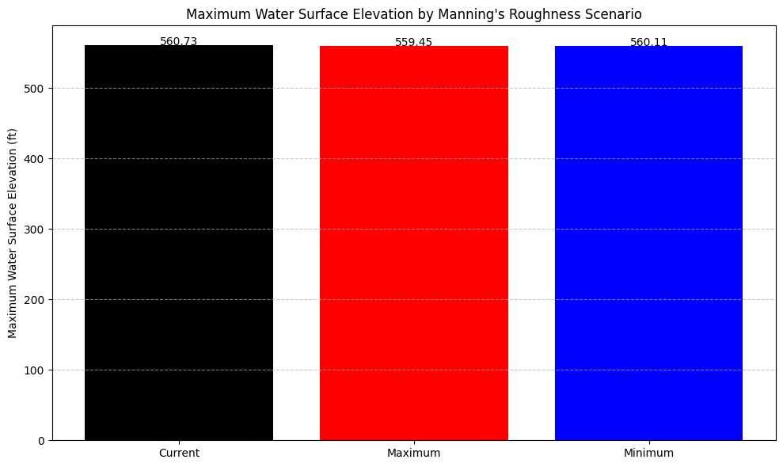

Manning's n Bulk Analysis¶
Manning's n Bulk Sensitivity Analysis¶
Overview¶
This notebook demonstrates bulk Manning's n sensitivity analysis for HEC-RAS 2D models with spatially variable roughness. Understanding Manning's n sensitivity is critical for:
- Model Calibration: Identifying which roughness zones have greatest impact on results
- Uncertainty Quantification: Bounding model predictions based on parameter uncertainty
- Data Collection Prioritization: Focusing field surveys on high-sensitivity areas
- Regulatory Compliance: Documenting calibration process for permit applications
What This Notebook Does¶
- Extracts a 2D project with Manning's n regions
- Defines parameter ranges for each roughness zone
- Systematically varies Manning's n values (bulk modification)
- Executes HEC-RAS for each parameter combination
- Extracts results at point of interest
- Quantifies sensitivity metrics (elasticity, variance contribution)
LLM Forward Principle: Multi-Level Verifiability¶
This analysis produces: - Parameter Matrix: CSV of all tested Manning's n combinations - Results Table: Water surface elevations for each scenario - Sensitivity Metrics: Quantitative measures of parameter influence - Visualizations: Tornado diagrams, sensitivity curves - HEC-RAS Projects: Reviewable in GUI for each scenario
Manning's n Physical Context¶
Typical Ranges by Land Cover: - Paved surfaces: 0.010 - 0.015 - Mowed grass: 0.020 - 0.035 - Pasture/crops: 0.030 - 0.050 - Brush/scrub: 0.050 - 0.120 - Forest/woodland: 0.080 - 0.200
Uncertainty Bounds: - Well-characterized: ±20% variation - Poorly-characterized: ±50% variation or more
Reference¶
For Manning's n selection guidance: - Chow (1959) Open-Channel Hydraulics: Table 5-6 - HEC-RAS 2D User Manual: Section 3.7 - Manning's n Values - USGS TWI 3-A1: Roughness Characteristics of Natural Channels
For sensitivity analysis methodology: - ASCE Manual 110: Sedimentation Engineering - Calibration Guidance - Saltelli et al. (2008) Global Sensitivity Analysis: The Primer
Analysis Approach¶
One-at-a-Time (OAT) Sensitivity: - Vary one Manning's n region while holding others constant - Identify most influential parameters - Computationally efficient (N parameters = N+1 runs)
Note: This bulk approach modifies ALL Manning's n values simultaneously. For individual region sensitivity, see notebook 711 (Multi-Interval).
Import Libraries and Setup ras-commander¶
Defaulting to user installation because normal site-packages is not writeable
Requirement already satisfied: seaborn in c:\users\bill\appdata\roaming\python\python313\site-packages (0.13.2)
Requirement already satisfied: numpy!=1.24.0,>=1.20 in c:\programdata\anaconda3\envs\ras-commander\lib\site-packages (from seaborn) (2.4.1)
Requirement already satisfied: pandas>=1.2 in c:\programdata\anaconda3\envs\ras-commander\lib\site-packages (from seaborn) (2.3.3)
Requirement already satisfied: matplotlib!=3.6.1,>=3.4 in c:\programdata\anaconda3\envs\ras-commander\lib\site-packages (from seaborn) (3.10.8)
Requirement already satisfied: contourpy>=1.0.1 in c:\programdata\anaconda3\envs\ras-commander\lib\site-packages (from matplotlib!=3.6.1,>=3.4->seaborn) (1.3.3)
Requirement already satisfied: cycler>=0.10 in c:\programdata\anaconda3\envs\ras-commander\lib\site-packages (from matplotlib!=3.6.1,>=3.4->seaborn) (0.12.1)
Requirement already satisfied: fonttools>=4.22.0 in c:\programdata\anaconda3\envs\ras-commander\lib\site-packages (from matplotlib!=3.6.1,>=3.4->seaborn) (4.61.1)
Requirement already satisfied: kiwisolver>=1.3.1 in c:\programdata\anaconda3\envs\ras-commander\lib\site-packages (from matplotlib!=3.6.1,>=3.4->seaborn) (1.4.9)
Requirement already satisfied: packaging>=20.0 in c:\programdata\anaconda3\envs\ras-commander\lib\site-packages (from matplotlib!=3.6.1,>=3.4->seaborn) (25.0)
Requirement already satisfied: pillow>=8 in c:\programdata\anaconda3\envs\ras-commander\lib\site-packages (from matplotlib!=3.6.1,>=3.4->seaborn) (12.1.0)
Requirement already satisfied: pyparsing>=3 in c:\programdata\anaconda3\envs\ras-commander\lib\site-packages (from matplotlib!=3.6.1,>=3.4->seaborn) (3.3.1)
Requirement already satisfied: python-dateutil>=2.7 in c:\programdata\anaconda3\envs\ras-commander\lib\site-packages (from matplotlib!=3.6.1,>=3.4->seaborn) (2.9.0.post0)
Requirement already satisfied: pytz>=2020.1 in c:\programdata\anaconda3\envs\ras-commander\lib\site-packages (from pandas>=1.2->seaborn) (2025.2)
Requirement already satisfied: tzdata>=2022.7 in c:\programdata\anaconda3\envs\ras-commander\lib\site-packages (from pandas>=1.2->seaborn) (2025.3)
Requirement already satisfied: six>=1.5 in c:\programdata\anaconda3\envs\ras-commander\lib\site-packages (from python-dateutil>=2.7->matplotlib!=3.6.1,>=3.4->seaborn) (1.17.0)
# =============================================================================
# DEVELOPMENT MODE TOGGLE
# =============================================================================
USE_LOCAL_SOURCE = False # <-- TOGGLE THIS
if USE_LOCAL_SOURCE:
import sys
from pathlib import Path
local_path = str(Path.cwd().parent)
if local_path not in sys.path:
sys.path.insert(0, local_path)
print(f"📁 LOCAL SOURCE MODE: Loading from {local_path}/ras_commander")
else:
from pathlib import Path
print("📦 PIP PACKAGE MODE: Loading installed ras-commander")
# Import ras-commander
from ras_commander import (
init_ras_project, RasExamples, RasPlan, RasCmdr,
RasGeo, HdfMesh, HdfResultsMesh
)
# Additional imports
import os
import numpy as np
import pandas as pd
import matplotlib.pyplot as plt
import seaborn as sns
from datetime import datetime
from shapely.geometry import Point
# Verify which version loaded
import ras_commander
print(f"✓ Loaded: {ras_commander.__file__}")
📦 PIP PACKAGE MODE: Loading installed ras-commander
✓ Loaded: C:\Users\bill\AppData\Roaming\Python\Python313\site-packages\ras_commander\__init__.py
Parameters¶
Configure these values to customize the notebook for your project.
# =============================================================================
# PARAMETERS - Edit these to customize the notebook
# =============================================================================
from pathlib import Path
# Project Configuration
PROJECT_NAME = "BaldEagleCrkMulti2D" # Example project to extract
RAS_VERSION = "6.6" # HEC-RAS version
# Manning's Sensitivity Settings
PLAN = "03" # Template plan (must have base and regional overrides)
POINT_OF_INTEREST = (2081544, 365715) # (x, y) coordinates for result extraction
INCLUDE_REGIONAL_OVERRIDES = True # Adjust regional Manning's values
INCLUDE_BASE_OVERRIDES = True # Adjust base Manning's values
# Execution Settings
RUN_PARALLEL = True # Run plans in parallel
MAX_WORKERS = 4 # Parallel workers
NUM_CORES = 2 # Cores per worker
Note on DataFrame Column Naming¶
Important: The ras-commander library uses simplified column names in DataFrames for Manning's n values:
- DataFrame column: (no apostrophe)
- HEC-RAS HDF files: (with apostrophe - official technical term)
This design decision simplifies DataFrame operations by avoiding special characters in column names, while HEC-RAS's internal HDF structure retains the technically correct spelling with the apostrophe.
When working with Manning's n values from , always reference the column as (without apostrophe).
Define Mannings n Value Ranges¶
def create_manning_minmax_df():
"""
Create a dataframe containing minimum and maximum Mannings n values
based on recommended ranges from literature.
Returns:
pd.DataFrame: DataFrame with columns for Land Cover Name, min_n, max_n
"""
# Define the data as a list of dictionaries
manning_data = [
{"Land Cover Name": "NoData", "min_n": 0.050, "max_n": 0.070},
{"Land Cover Name": "Barren Land Rock/Sand/Clay", "min_n": 0.023, "max_n": 0.100},
{"Land Cover Name": "Cultivated Crops", "min_n": 0.020, "max_n": 0.100},
{"Land Cover Name": "Deciduous Forest", "min_n": 0.100, "max_n": 0.200},
{"Land Cover Name": "Developed, High Intensity", "min_n": 0.120, "max_n": 0.200},
{"Land Cover Name": "Developed, Low Intensity", "min_n": 0.060, "max_n": 0.120},
{"Land Cover Name": "Developed, Medium Intensity", "min_n": 0.080, "max_n": 0.160},
{"Land Cover Name": "Developed, Open Space", "min_n": 0.030, "max_n": 0.090},
{"Land Cover Name": "Emergent Herbaceous Wetlands", "min_n": 0.050, "max_n": 0.120},
{"Land Cover Name": "Evergreen Forest", "min_n": 0.080, "max_n": 0.160},
{"Land Cover Name": "Grassland/Herbaceous", "min_n": 0.025, "max_n": 0.070},
{"Land Cover Name": "Mixed Forest", "min_n": 0.080, "max_n": 0.200},
{"Land Cover Name": "Open Water", "min_n": 0.025, "max_n": 0.050},
{"Land Cover Name": "Pasture/Hay", "min_n": 0.025, "max_n": 0.090},
{"Land Cover Name": "Shrub/Scrub", "min_n": 0.070, "max_n": 0.160},
{"Land Cover Name": "Woody Wetlands", "min_n": 0.045, "max_n": 0.150}
]
# Create DataFrame
df = pd.DataFrame(manning_data)
# Calculate the midpoint value
df['mid_n'] = (df['min_n'] + df['max_n']) / 2
# Sort by land cover name
df = df.sort_values('Land Cover Name').reset_index(drop=True)
# Print summary information
print(f"Mannings n value ranges for {len(df)} land cover types:")
print(df)
return df
# Create the Mannings n ranges dataframe
manning_minmax_df = create_manning_minmax_df()
Mannings n value ranges for 16 land cover types:
Land Cover Name min_n max_n mid_n
0 Barren Land Rock/Sand/Clay 0.023 0.10 0.0615
1 Cultivated Crops 0.020 0.10 0.0600
2 Deciduous Forest 0.100 0.20 0.1500
3 Developed, High Intensity 0.120 0.20 0.1600
4 Developed, Low Intensity 0.060 0.12 0.0900
5 Developed, Medium Intensity 0.080 0.16 0.1200
6 Developed, Open Space 0.030 0.09 0.0600
7 Emergent Herbaceous Wetlands 0.050 0.12 0.0850
8 Evergreen Forest 0.080 0.16 0.1200
9 Grassland/Herbaceous 0.025 0.07 0.0475
10 Mixed Forest 0.080 0.20 0.1400
11 NoData 0.050 0.07 0.0600
12 Open Water 0.025 0.05 0.0375
13 Pasture/Hay 0.025 0.09 0.0575
14 Shrub/Scrub 0.070 0.16 0.1150
15 Woody Wetlands 0.045 0.15 0.0975
Mannings Bulk Sensitivity Analysis Function¶
def autoras_mannings_bulk_sensitivity(
project_folder,
template_plan,
manning_minmax_df=None,
include_regional_overrides=True,
include_base_overrides=True,
point_of_interest=None,
output_folder="Mannings_Bulk_Sensitivity",
run_parallel=True,
max_workers=2,
num_cores=2
):
"""
Perform Mannings n bulk sensitivity analysis by running model with minimum,
maximum, and current Mannings n values.
Args:
project_folder (str): Path to HEC-RAS project folder
template_plan (str): Plan number to use as template (e.g., "01")
manning_minmax_df (pd.DataFrame, optional): DataFrame with min/max n values
include_regional_overrides (bool, optional): Whether to adjust regional
Mannings values. Default is True.
include_base_overrides (bool, optional): Whether to adjust base
Mannings values. Default is True.
point_of_interest (tuple or Point, optional): Coordinates for extracting results
output_folder (str, optional): Name of output folder for results
run_parallel (bool, optional): Whether to run plans in parallel
max_workers (int, optional): Number of parallel workers
num_cores (int, optional): Number of cores per worker
Returns:
dict: Results of sensitivity analysis
"""
import time
from datetime import datetime
# Validate inputs
if not include_regional_overrides and not include_base_overrides:
raise ValueError("At least one of include_regional_overrides or include_base_overrides must be True")
# Use default manning_minmax_df if none provided
if manning_minmax_df is None:
manning_minmax_df = create_manning_minmax_df()
# Convert point_of_interest to Point if provided
if point_of_interest is not None and not isinstance(point_of_interest, Point):
point_of_interest = Point(point_of_interest[0], point_of_interest[1])
# Create timestamp for unique run identifier
timestamp = datetime.now().strftime("%Y%m%d_%H%M%S")
# Initialize RAS project using HEC-RAS Version 6.6 (Change if needed)
print(f"Initializing HEC-RAS project: {project_folder}")
ras = init_ras_project(project_folder, "6.6")
# Create output directory
results_dir = Path(project_folder) / output_folder
results_dir.mkdir(exist_ok=True)
print(f"Results will be saved to: {results_dir}")
# Display available plans
print("\nAvailable plans:")
print(ras.plan_df[['plan_number', 'Plan Title', 'Short Identifier']])
# Verify template plan exists
if template_plan not in ras.plan_df['plan_number'].values:
raise ValueError(f"Template plan {template_plan} not found in project")
# Get the geometry number associated with the template plan
template_geom = ras.plan_df.loc[ras.plan_df['plan_number'] == template_plan, 'geometry_number'].values[0]
print(f"\nTemplate plan: {template_plan} (Geometry: {template_geom})")
# Get the geometry file path
geom_path = ras.geom_df.loc[ras.geom_df['geom_number'] == template_geom, 'full_path'].values[0]
# Get the original Mannings values
original_baseoverrides = RasGeo.get_mannings_baseoverrides(geom_path)
original_regionoverrides = RasGeo.get_mannings_regionoverrides(geom_path)
# Check if regional overrides exist
has_regional_overrides = not original_regionoverrides.empty
if include_regional_overrides and not has_regional_overrides:
raise ValueError("include_regional_overrides is True, but no regional overrides found in the model")
# Store the current plan as "current" scenario
scenarios = [{
'name': 'Current',
'plan_number': template_plan,
'geom_number': template_geom,
'shortid': f"Current",
'description': "Current Mannings n Values"
}]
# Function to create a modified plan with adjusted Mannings values
def create_modified_plan(name, shortid, description, min_values=False, max_values=False):
print(f"\nCreating plan: {name} (ShortID: {shortid})")
print(f"Description: {description}")
# Clone the template plan
new_plan_number = RasPlan.clone_plan(template_plan, new_plan_shortid=shortid, ras_object=ras)
# Clone the template geometry
new_geom_number = RasPlan.clone_geom(template_geom, ras_object=ras)
# Set the new plan to use the new geometry
RasPlan.set_geom(new_plan_number, new_geom_number, ras_object=ras)
# Get the new geometry file path
new_geom_path = ras.geom_df.loc[ras.geom_df['geom_number'] == new_geom_number, 'full_path'].values[0]
# Adjust base Mannings values if enabled
if include_base_overrides:
modified_baseoverrides = original_baseoverrides.copy()
# For each land cover type in the base overrides
for idx, row in modified_baseoverrides.iterrows():
land_cover = row['Land Cover Name']
# Find matching land cover in manning_minmax_df
match = manning_minmax_df[manning_minmax_df['Land Cover Name'] == land_cover]
if not match.empty:
current_value = row["Base Mannings n Value"]
if min_values:
new_value = match['min_n'].values[0]
elif max_values:
new_value = match['max_n'].values[0]
else:
new_value = current_value # No change
modified_baseoverrides.loc[idx, "Base Mannings n Value"] = new_value
print(f" Adjusted base override for '{land_cover}': {current_value:.4f} → {new_value:.4f}")
# Apply modified base Mannings values
RasGeo.set_mannings_baseoverrides(new_geom_path, modified_baseoverrides)
else:
# Just copy the original base overrides
RasGeo.set_mannings_baseoverrides(new_geom_path, original_baseoverrides)
# Adjust regional Mannings values if enabled and they exist
if include_regional_overrides and has_regional_overrides:
modified_regionoverrides = original_regionoverrides.copy()
# For each row in the region overrides
for idx, row in modified_regionoverrides.iterrows():
land_cover = row['Land Cover Name']
region_name = row['Region Name']
# Find matching land cover in manning_minmax_df
match = manning_minmax_df[manning_minmax_df['Land Cover Name'] == land_cover]
if not match.empty:
current_value = row["MainChannel"]
if min_values:
new_value = match['min_n'].values[0]
elif max_values:
new_value = match['max_n'].values[0]
else:
new_value = current_value # No change
modified_regionoverrides.loc[idx, "MainChannel"] = new_value
print(f" Adjusted region override for '{land_cover}' in '{region_name}': {current_value:.4f} → {new_value:.4f}")
# Apply modified regional Mannings values
RasGeo.set_mannings_regionoverrides(new_geom_path, modified_regionoverrides)
elif has_regional_overrides:
# Just copy the original region overrides
RasGeo.set_mannings_regionoverrides(new_geom_path, original_regionoverrides)
# Store scenario details
return {
'name': name,
'plan_number': new_plan_number,
'geom_number': new_geom_number,
'shortid': shortid,
'description': description
}
# Create minimum and maximum scenarios
min_scenario = create_modified_plan(
name="Minimum",
shortid="Min_n",
description="Minimum Recommended Mannings n Values",
min_values=True
)
print(f"Minimum Scenario Plan Number: {min_scenario}")
max_scenario = create_modified_plan(
name="Maximum",
shortid="Max_n",
description="Maximum Recommended Mannings n Values",
max_values=True
)
print(f"Maximum Scenario Plan Number: {max_scenario}")
# Add scenarios to list
scenarios.append(min_scenario)
scenarios.append(max_scenario)
print(f"Scenarios: \n{scenarios}")
# Get plan numbers for the new scenarios (excluding template which is already computed)
plan_numbers = [str(scenario['plan_number']) for scenario in scenarios]
print(f"Plan Numbers: \n{plan_numbers}")
# Save scenario information
scenario_info = pd.DataFrame(scenarios)
scenario_info_path = results_dir / "scenarios.csv"
scenario_info.to_csv(scenario_info_path, index=False)
print(f"\nScenario information saved to: {scenario_info_path}")
# Run the plans (either in parallel or sequentially)
if run_parallel:
print(f"\nRunning {len(plan_numbers)} plans in parallel...")
results = RasCmdr.compute_parallel(
plan_number=plan_numbers,
max_workers=max_workers,
num_cores=num_cores,
clear_geompre=True
)
else:
print(f"\nRunning {len(plan_numbers)} plans sequentially...")
results = {}
for plan_number in plan_numbers:
print(f" Running plan {plan_number}...")
result = RasCmdr.compute_plan(plan_number, num_cores=num_cores, clear_geompre=True)
results[plan_number] = result
print("\nExecution results:")
for plan, success in results.items():
print(f" Plan {plan}: {'Successful' if success else 'Failed'}")
# Early return if no point of interest is provided
if point_of_interest is None:
print("\nNo point of interest provided. Skipping results extraction and analysis.")
return {
'scenarios': scenarios,
'execution_results': results,
'output_folder': results_dir
}
# Find nearest mesh cell for result extraction
# Use the geometry from the first executed plan for cell identification
geom_hdf_path = None
for scenario in scenarios:
geom_number = scenario['geom_number']
try:
geom_hdf_path = ras.geom_df.loc[ras.geom_df['geom_number'] == geom_number, 'hdf_path'].values[0]
break
except:
continue
if geom_hdf_path is None:
print("ERROR: Could not find HDF path for any geometry")
return {
'scenarios': scenarios,
'execution_results': results,
'output_folder': results_dir
}
plan_number = scenario['plan_number']
# Find the nearest mesh cell to the point of interest
mesh_cells_gdf = HdfMesh.get_mesh_cell_points(plan_number, ras_object=ras)
# Calculate distances from the point to all mesh cells
distances = mesh_cells_gdf.geometry.apply(lambda geom: geom.distance(point_of_interest))
# Find the index of the minimum distance
nearest_idx = distances.idxmin()
# Get the cell ID for results extraction
mesh_cell_for_results = mesh_cells_gdf.loc[nearest_idx, 'cell_id']
mesh_name = mesh_cells_gdf.loc[nearest_idx, 'mesh_name']
print(f"\nNearest cell ID: {mesh_cell_for_results}")
print(f"Distance: {distances[nearest_idx]:.2f} units")
print(f"Mesh area: {mesh_name}")
# Extract and store results
all_results = {}
max_ws_values = []
# Get results for each scenario
for scenario in scenarios:
plan_number = scenario['plan_number']
name = scenario['name']
shortid = scenario['shortid']
# Get the results for this plan
try:
results_xr = HdfResultsMesh.get_mesh_cells_timeseries(plan_number, ras_object=ras)
# Extract water surface data for the specific cell
ws_data = results_xr[mesh_name]['Water Surface'].sel(cell_id=int(mesh_cell_for_results))
# Convert to DataFrame for easier handling
ws_df = pd.DataFrame({
'time': ws_data.time.values,
'water_surface': ws_data.values
})
# Store in results dictionary
all_results[plan_number] = {
'name': name,
'shortid': shortid,
'df': ws_df,
'max_water_surface': ws_df['water_surface'].max()
}
# Store the maximum water surface value for summary
max_ws = ws_df['water_surface'].max()
max_ws_values.append({
'plan_number': plan_number,
'name': name,
'shortid': shortid,
'max_water_surface': max_ws
})
print(f"Scenario: {name} ({shortid}): Max Water Surface = {max_ws:.2f}")
# Save time series to CSV
plan_csv_path = results_dir / f"timeseries_{shortid}.csv"
ws_df.to_csv(plan_csv_path, index=False)
print(f" Time series saved to: {plan_csv_path}")
except Exception as e:
print(f"Error extracting results for scenario {name}: {str(e)}")
# Create a summary DataFrame for maximum water surface values
max_ws_df = pd.DataFrame(max_ws_values)
# Save the summary to CSV
summary_csv_path = results_dir / "max_water_surface_summary.csv"
max_ws_df.to_csv(summary_csv_path, index=False)
print(f"\nSummary of maximum water surface elevations saved to: {summary_csv_path}")
# Create and save plots if results were successfully extracted
if all_results:
# Plot time series for all scenarios
plt.figure(figsize=(14, 8))
# Define colors for scenarios
colors = {'Current': 'black', 'Minimum': 'blue', 'Maximum': 'red'}
# Plot each scenario
for scenario in scenarios:
plan_number = scenario['plan_number']
name = scenario['name']
if plan_number in all_results:
result = all_results[plan_number]
df = result['df']
color = colors.get(name, 'gray')
linestyle = '-' if name == 'Current' else '--'
linewidth = 2 if name == 'Current' else 1.5
plt.plot(df['time'], df['water_surface'],
label=f"{name} ({result['shortid']})",
color=color, linestyle=linestyle, linewidth=linewidth)
# Add plot details
plt.title(f'Water Surface Sensitivity to Manning\'s Roughness at Cell ID: {mesh_cell_for_results}')
plt.xlabel('Time')
plt.ylabel('Water Surface Elevation (ft)')
plt.grid(True, linestyle='--', alpha=0.7)
plt.legend()
# Save the time series plot
timeseries_plot_path = results_dir / "water_surface_timeseries.png"
plt.tight_layout()
plt.savefig(timeseries_plot_path)
print(f"Time series plot saved to: {timeseries_plot_path}")
# Create bar chart of maximum water surface elevations
plt.figure(figsize=(10, 6))
# Sort by name for consistent ordering
max_ws_df_sorted = max_ws_df.sort_values('name')
# Create bar colors
bar_colors = [colors.get(name, 'gray') for name in max_ws_df_sorted['name']]
# Create bar chart
plt.bar(max_ws_df_sorted['name'], max_ws_df_sorted['max_water_surface'], color=bar_colors)
# Add values on top of bars
for i, value in enumerate(max_ws_df_sorted['max_water_surface']):
plt.text(i, value + 0.1, f'{value:.2f}', ha='center')
# Add plot details
plt.title('Maximum Water Surface Elevation by Manning\'s Roughness Scenario')
plt.ylabel('Maximum Water Surface Elevation (ft)')
plt.grid(axis='y', linestyle='--', alpha=0.7)
# Save the bar chart
bar_plot_path = results_dir / "max_water_surface_comparison.png"
plt.tight_layout()
plt.savefig(bar_plot_path)
print(f"Bar chart saved to: {bar_plot_path}")
# Show plots
plt.show()
# Calculate differences between scenarios
if len(max_ws_df) >= 2:
# Get values for each scenario
try:
current_ws = max_ws_df.loc[max_ws_df['name'] == 'Current', 'max_water_surface'].values[0]
min_ws = max_ws_df.loc[max_ws_df['name'] == 'Minimum', 'max_water_surface'].values[0]
max_ws = max_ws_df.loc[max_ws_df['name'] == 'Maximum', 'max_water_surface'].values[0]
print("\nSensitivity Analysis Summary:")
print(f" Current maximum WSE: {current_ws:.2f} ft")
print(f" Minimum n maximum WSE: {min_ws:.2f} ft")
print(f" Maximum n maximum WSE: {max_ws:.2f} ft")
print(f" Range: {max_ws - min_ws:.2f} ft")
print(f" Current vs Min: {current_ws - min_ws:.2f} ft")
print(f" Current vs Max: {max_ws - current_ws:.2f} ft")
# Calculate the percentage of the range
if max_ws != min_ws:
current_position = (current_ws - min_ws) / (max_ws - min_ws) * 100
print(f" Current position within range: {current_position:.1f}%")
except:
print("Could not calculate differences between scenarios")
# Return results
return {
'scenarios': scenarios,
'execution_results': results,
'results': all_results if 'all_results' in locals() else None,
'max_ws_summary': max_ws_df if 'max_ws_df' in locals() else None,
'mesh_cell_id': mesh_cell_for_results if 'mesh_cell_for_results' in locals() else None,
'mesh_name': mesh_name if 'mesh_name' in locals() else None,
'output_folder': results_dir
}
Example Usage¶
# Run this code cell if you want to use the BaldEagleCrkMulti2D Example Project
project_folder = RasExamples.extract_project(PROJECT_NAME, suffix="105")
import os
# Get the current directory for the project path
current_dir = Path(os.getcwd()).resolve()
template_plan = PLAN # Use PLAN from parameters
# Either as a tuple (x, y) or as a Point object
point_of_interest = POINT_OF_INTEREST # Use from parameters
2026-01-17 17:44:40 - ras_commander.RasExamples - INFO - Found zip file: C:\Users\bill\AppData\Local\ras-commander\examples\Example_Projects_6_6.zip
2026-01-17 17:44:40 - ras_commander.RasExamples - INFO - Loading project data from CSV...
2026-01-17 17:44:40 - ras_commander.RasExamples - INFO - Loaded 68 projects from CSV.
2026-01-17 17:44:40 - ras_commander.RasExamples - INFO - ----- RasExamples Extracting Project -----
2026-01-17 17:44:40 - ras_commander.RasExamples - INFO - Extracting project 'BaldEagleCrkMulti2D' as 'BaldEagleCrkMulti2D_105'
2026-01-17 17:44:40 - ras_commander.RasExamples - INFO - Folder 'BaldEagleCrkMulti2D_105' already exists. Deleting existing folder...
2026-01-17 17:44:40 - ras_commander.RasExamples - INFO - Existing folder 'BaldEagleCrkMulti2D_105' has been deleted.
2026-01-17 17:44:41 - ras_commander.RasExamples - INFO - Successfully extracted project 'BaldEagleCrkMulti2D' to c:\GH\ras-commander\examples\example_projects\BaldEagleCrkMulti2D_105
# Uncomment and Run this Code Cell if you are using your own project
#project_folder = r"C:\Path\To\HEC-RAS\Project"
#template_plan = "01" # Change to your desired template plan number
# Either as a tuple (x, y) or as a Point object
#point_of_interest = (2081544, 365715) # Adjust coordinates as needed
# Define a point of interest for result extraction
# Create the Mannings n ranges dataframe (or use the default)
manning_ranges = create_manning_minmax_df()
Mannings n value ranges for 16 land cover types:
Land Cover Name min_n max_n mid_n
0 Barren Land Rock/Sand/Clay 0.023 0.10 0.0615
1 Cultivated Crops 0.020 0.10 0.0600
2 Deciduous Forest 0.100 0.20 0.1500
3 Developed, High Intensity 0.120 0.20 0.1600
4 Developed, Low Intensity 0.060 0.12 0.0900
5 Developed, Medium Intensity 0.080 0.16 0.1200
6 Developed, Open Space 0.030 0.09 0.0600
7 Emergent Herbaceous Wetlands 0.050 0.12 0.0850
8 Evergreen Forest 0.080 0.16 0.1200
9 Grassland/Herbaceous 0.025 0.07 0.0475
10 Mixed Forest 0.080 0.20 0.1400
11 NoData 0.050 0.07 0.0600
12 Open Water 0.025 0.05 0.0375
13 Pasture/Hay 0.025 0.09 0.0575
14 Shrub/Scrub 0.070 0.16 0.1150
15 Woody Wetlands 0.045 0.15 0.0975
# Execute the template plan first (required for mesh cell identification)
print(f"Executing template plan {template_plan} before sensitivity analysis...")
init_ras_project(project_folder, RAS_VERSION)
RasCmdr.compute_plan(template_plan, num_cores=NUM_CORES)
print(f"Template plan {template_plan} execution complete.")
2026-01-17 17:44:41 - ras_commander.geom.GeomLateral - INFO - Found 0 lateral structures in BaldEagleDamBrk.g06
2026-01-17 17:44:41 - ras_commander.geom.GeomLateral - INFO - Found 0 SA/2D connections in BaldEagleDamBrk.g06
2026-01-17 17:44:41 - ras_commander.geom.GeomLateral - INFO - Found 0 lateral structures in BaldEagleDamBrk.g08
2026-01-17 17:44:41 - ras_commander.geom.GeomLateral - INFO - Found 0 SA/2D connections in BaldEagleDamBrk.g08
2026-01-17 17:44:41 - ras_commander.geom.GeomLateral - INFO - Found 0 lateral structures in BaldEagleDamBrk.g10
Executing template plan 03 before sensitivity analysis...
2026-01-17 17:44:41 - ras_commander.geom.GeomLateral - INFO - Found 0 SA/2D connections in BaldEagleDamBrk.g10
2026-01-17 17:44:41 - ras_commander.geom.GeomLateral - INFO - Found 0 lateral structures in BaldEagleDamBrk.g11
2026-01-17 17:44:41 - ras_commander.geom.GeomLateral - INFO - Found 0 SA/2D connections in BaldEagleDamBrk.g11
2026-01-17 17:44:41 - ras_commander.geom.GeomLateral - INFO - Found 0 lateral structures in BaldEagleDamBrk.g12
2026-01-17 17:44:41 - ras_commander.geom.GeomLateral - INFO - Found 0 SA/2D connections in BaldEagleDamBrk.g12
2026-01-17 17:44:41 - ras_commander.geom.GeomLateral - INFO - Found 0 lateral structures in BaldEagleDamBrk.g09
2026-01-17 17:44:41 - ras_commander.geom.GeomLateral - INFO - Found 0 SA/2D connections in BaldEagleDamBrk.g09
2026-01-17 17:44:41 - ras_commander.geom.GeomLateral - INFO - Found 0 lateral structures in BaldEagleDamBrk.g13
2026-01-17 17:44:41 - ras_commander.geom.GeomLateral - INFO - Found 0 SA/2D connections in BaldEagleDamBrk.g13
2026-01-17 17:44:41 - ras_commander.geom.GeomLateral - INFO - Found 0 lateral structures in BaldEagleDamBrk.g01
2026-01-17 17:44:41 - ras_commander.geom.GeomLateral - INFO - Found 0 SA/2D connections in BaldEagleDamBrk.g01
2026-01-17 17:44:42 - ras_commander.geom.GeomLateral - INFO - Found 0 lateral structures in BaldEagleDamBrk.g03
2026-01-17 17:44:42 - ras_commander.geom.GeomLateral - INFO - Found 0 SA/2D connections in BaldEagleDamBrk.g03
2026-01-17 17:44:42 - ras_commander.geom.GeomLateral - INFO - Found 0 lateral structures in BaldEagleDamBrk.g02
2026-01-17 17:44:42 - ras_commander.geom.GeomLateral - INFO - Found 0 SA/2D connections in BaldEagleDamBrk.g02
2026-01-17 17:44:42 - ras_commander.RasMap - INFO - Successfully parsed RASMapper file: C:\GH\ras-commander\examples\example_projects\BaldEagleCrkMulti2D_105\BaldEagleDamBrk.rasmap
2026-01-17 17:44:42 - ras_commander.RasPrj - INFO - Updated results_df with 11 plan(s)
2026-01-17 17:44:42 - ras_commander.RasCmdr - INFO - Using ras_object with project folder: C:\GH\ras-commander\examples\example_projects\BaldEagleCrkMulti2D_105
2026-01-17 17:44:42 - ras_commander.RasUtils - INFO - Using provided plan file path: C:\GH\ras-commander\examples\example_projects\BaldEagleCrkMulti2D_105\BaldEagleDamBrk.p03
2026-01-17 17:44:42 - ras_commander.RasUtils - INFO - Successfully updated file: C:\GH\ras-commander\examples\example_projects\BaldEagleCrkMulti2D_105\BaldEagleDamBrk.p03
2026-01-17 17:44:42 - ras_commander.geom.GeomLateral - INFO - Found 0 lateral structures in BaldEagleDamBrk.g06
2026-01-17 17:44:42 - ras_commander.geom.GeomLateral - INFO - Found 0 SA/2D connections in BaldEagleDamBrk.g06
2026-01-17 17:44:42 - ras_commander.geom.GeomLateral - INFO - Found 0 lateral structures in BaldEagleDamBrk.g08
2026-01-17 17:44:42 - ras_commander.geom.GeomLateral - INFO - Found 0 SA/2D connections in BaldEagleDamBrk.g08
2026-01-17 17:44:42 - ras_commander.geom.GeomLateral - INFO - Found 0 lateral structures in BaldEagleDamBrk.g10
2026-01-17 17:44:42 - ras_commander.geom.GeomLateral - INFO - Found 0 SA/2D connections in BaldEagleDamBrk.g10
2026-01-17 17:44:42 - ras_commander.geom.GeomLateral - INFO - Found 0 lateral structures in BaldEagleDamBrk.g11
2026-01-17 17:44:42 - ras_commander.geom.GeomLateral - INFO - Found 0 SA/2D connections in BaldEagleDamBrk.g11
2026-01-17 17:44:42 - ras_commander.geom.GeomLateral - INFO - Found 0 lateral structures in BaldEagleDamBrk.g12
2026-01-17 17:44:42 - ras_commander.geom.GeomLateral - INFO - Found 0 SA/2D connections in BaldEagleDamBrk.g12
2026-01-17 17:44:42 - ras_commander.geom.GeomLateral - INFO - Found 0 lateral structures in BaldEagleDamBrk.g09
2026-01-17 17:44:42 - ras_commander.geom.GeomLateral - INFO - Found 0 SA/2D connections in BaldEagleDamBrk.g09
2026-01-17 17:44:42 - ras_commander.geom.GeomLateral - INFO - Found 0 lateral structures in BaldEagleDamBrk.g13
2026-01-17 17:44:42 - ras_commander.geom.GeomLateral - INFO - Found 0 SA/2D connections in BaldEagleDamBrk.g13
2026-01-17 17:44:42 - ras_commander.geom.GeomLateral - INFO - Found 0 lateral structures in BaldEagleDamBrk.g01
2026-01-17 17:44:42 - ras_commander.geom.GeomLateral - INFO - Found 0 SA/2D connections in BaldEagleDamBrk.g01
2026-01-17 17:44:42 - ras_commander.geom.GeomLateral - INFO - Found 0 lateral structures in BaldEagleDamBrk.g03
2026-01-17 17:44:42 - ras_commander.geom.GeomLateral - INFO - Found 0 SA/2D connections in BaldEagleDamBrk.g03
2026-01-17 17:44:42 - ras_commander.geom.GeomLateral - INFO - Found 0 lateral structures in BaldEagleDamBrk.g02
2026-01-17 17:44:42 - ras_commander.geom.GeomLateral - INFO - Found 0 SA/2D connections in BaldEagleDamBrk.g02
2026-01-17 17:44:42 - ras_commander.RasCmdr - INFO - Set number of cores to 2 for plan: 03
2026-01-17 17:44:42 - ras_commander.RasCmdr - INFO - Running HEC-RAS from the Command Line:
2026-01-17 17:44:42 - ras_commander.RasCmdr - INFO - Running command: "C:\Program Files (x86)\HEC\HEC-RAS\6.6\Ras.exe" -c "C:\GH\ras-commander\examples\example_projects\BaldEagleCrkMulti2D_105\BaldEagleDamBrk.prj" "C:\GH\ras-commander\examples\example_projects\BaldEagleCrkMulti2D_105\BaldEagleDamBrk.p03"
2026-01-17 17:47:33 - ras_commander.RasCmdr - INFO - HEC-RAS execution completed for plan: 03
2026-01-17 17:47:33 - ras_commander.RasCmdr - INFO - Total run time for plan 03: 171.21 seconds
2026-01-17 17:47:33 - ras_commander.geom.GeomLateral - INFO - Found 0 lateral structures in BaldEagleDamBrk.g06
2026-01-17 17:47:33 - ras_commander.geom.GeomLateral - INFO - Found 0 SA/2D connections in BaldEagleDamBrk.g06
2026-01-17 17:47:33 - ras_commander.geom.GeomLateral - INFO - Found 0 lateral structures in BaldEagleDamBrk.g08
2026-01-17 17:47:33 - ras_commander.geom.GeomLateral - INFO - Found 0 SA/2D connections in BaldEagleDamBrk.g08
2026-01-17 17:47:33 - ras_commander.geom.GeomLateral - INFO - Found 0 lateral structures in BaldEagleDamBrk.g10
2026-01-17 17:47:33 - ras_commander.geom.GeomLateral - INFO - Found 0 SA/2D connections in BaldEagleDamBrk.g10
2026-01-17 17:47:33 - ras_commander.geom.GeomLateral - INFO - Found 0 lateral structures in BaldEagleDamBrk.g11
2026-01-17 17:47:33 - ras_commander.geom.GeomLateral - INFO - Found 0 SA/2D connections in BaldEagleDamBrk.g11
2026-01-17 17:47:33 - ras_commander.geom.GeomLateral - INFO - Found 0 lateral structures in BaldEagleDamBrk.g12
2026-01-17 17:47:33 - ras_commander.geom.GeomLateral - INFO - Found 0 SA/2D connections in BaldEagleDamBrk.g12
2026-01-17 17:47:33 - ras_commander.geom.GeomLateral - INFO - Found 0 lateral structures in BaldEagleDamBrk.g09
2026-01-17 17:47:33 - ras_commander.geom.GeomLateral - INFO - Found 0 SA/2D connections in BaldEagleDamBrk.g09
2026-01-17 17:47:33 - ras_commander.geom.GeomLateral - INFO - Found 0 lateral structures in BaldEagleDamBrk.g13
2026-01-17 17:47:33 - ras_commander.geom.GeomLateral - INFO - Found 0 SA/2D connections in BaldEagleDamBrk.g13
2026-01-17 17:47:33 - ras_commander.geom.GeomLateral - INFO - Found 0 lateral structures in BaldEagleDamBrk.g01
2026-01-17 17:47:33 - ras_commander.geom.GeomLateral - INFO - Found 0 SA/2D connections in BaldEagleDamBrk.g01
2026-01-17 17:47:33 - ras_commander.geom.GeomLateral - INFO - Found 0 lateral structures in BaldEagleDamBrk.g03
2026-01-17 17:47:33 - ras_commander.geom.GeomLateral - INFO - Found 0 SA/2D connections in BaldEagleDamBrk.g03
2026-01-17 17:47:33 - ras_commander.geom.GeomLateral - INFO - Found 0 lateral structures in BaldEagleDamBrk.g02
2026-01-17 17:47:33 - ras_commander.geom.GeomLateral - INFO - Found 0 SA/2D connections in BaldEagleDamBrk.g02
2026-01-17 17:47:33 - ras_commander.hdf.HdfResultsPlan - INFO - Using existing Path object HDF file: C:\GH\ras-commander\examples\example_projects\BaldEagleCrkMulti2D_105\BaldEagleDamBrk.p03.hdf
2026-01-17 17:47:33 - ras_commander.hdf.HdfResultsPlan - INFO - Final validated file path: C:\GH\ras-commander\examples\example_projects\BaldEagleCrkMulti2D_105\BaldEagleDamBrk.p03.hdf
2026-01-17 17:47:33 - ras_commander.hdf.HdfResultsPlan - INFO - Reading computation messages from HDF: BaldEagleDamBrk.p03.hdf
2026-01-17 17:47:33 - ras_commander.hdf.HdfResultsPlan - INFO - Successfully extracted 2109 characters from HDF
2026-01-17 17:47:33 - ras_commander.hdf.HdfResultsPlan - INFO - Using existing Path object HDF file: C:\GH\ras-commander\examples\example_projects\BaldEagleCrkMulti2D_105\BaldEagleDamBrk.p03.hdf
2026-01-17 17:47:33 - ras_commander.hdf.HdfResultsPlan - INFO - Final validated file path: C:\GH\ras-commander\examples\example_projects\BaldEagleCrkMulti2D_105\BaldEagleDamBrk.p03.hdf
2026-01-17 17:47:33 - ras_commander.hdf.HdfResultsPlan - INFO - Extracting Plan Information from: BaldEagleDamBrk.p03.hdf
2026-01-17 17:47:33 - ras_commander.hdf.HdfResultsPlan - INFO - Plan Name: Single 2D Area - Internal Dam Structure
2026-01-17 17:47:33 - ras_commander.hdf.HdfResultsPlan - INFO - Simulation Duration (hours): 72.0
2026-01-17 17:47:33 - ras_commander.hdf.HdfResultsPlan - INFO - Using existing Path object HDF file: C:\GH\ras-commander\examples\example_projects\BaldEagleCrkMulti2D_105\BaldEagleDamBrk.p03.hdf
2026-01-17 17:47:33 - ras_commander.hdf.HdfResultsPlan - INFO - Final validated file path: C:\GH\ras-commander\examples\example_projects\BaldEagleCrkMulti2D_105\BaldEagleDamBrk.p03.hdf
C:\Users\bill\AppData\Roaming\Python\Python313\site-packages\ras_commander\RasPrj.py:1590: FutureWarning: The behavior of DataFrame concatenation with empty or all-NA entries is deprecated. In a future version, this will no longer exclude empty or all-NA columns when determining the result dtypes. To retain the old behavior, exclude the relevant entries before the concat operation.
self.results_df = pd.concat([self.results_df, new_results], ignore_index=True)
2026-01-17 17:47:33 - ras_commander.RasPrj - INFO - Updated results_df with 1 plan(s)
Template plan 03 execution complete.
# Example usage of the Mannings Bulk Sensitivity Analysis function
# Optional: Modify the ranges if needed
# manning_ranges.loc[manning_ranges['Land Cover Name'] == 'Open Water', 'min_n'] = 0.03
# manning_ranges.loc[manning_ranges['Land Cover Name'] == 'Open Water', 'max_n'] = 0.04
# Run the analysis
sensitivity_results = autoras_mannings_bulk_sensitivity(
project_folder=project_folder,
template_plan=template_plan,
manning_minmax_df=manning_ranges,
include_regional_overrides=INCLUDE_REGIONAL_OVERRIDES,
include_base_overrides=INCLUDE_BASE_OVERRIDES,
point_of_interest=point_of_interest,
output_folder="Mannings_Bulk_Sensitivity",
run_parallel=RUN_PARALLEL,
max_workers=MAX_WORKERS,
num_cores=NUM_CORES
)
2026-01-17 17:47:33 - ras_commander.geom.GeomLateral - INFO - Found 0 lateral structures in BaldEagleDamBrk.g06
2026-01-17 17:47:33 - ras_commander.geom.GeomLateral - INFO - Found 0 SA/2D connections in BaldEagleDamBrk.g06
2026-01-17 17:47:33 - ras_commander.geom.GeomLateral - INFO - Found 0 lateral structures in BaldEagleDamBrk.g08
2026-01-17 17:47:33 - ras_commander.geom.GeomLateral - INFO - Found 0 SA/2D connections in BaldEagleDamBrk.g08
2026-01-17 17:47:33 - ras_commander.geom.GeomLateral - INFO - Found 0 lateral structures in BaldEagleDamBrk.g10
2026-01-17 17:47:33 - ras_commander.geom.GeomLateral - INFO - Found 0 SA/2D connections in BaldEagleDamBrk.g10
2026-01-17 17:47:33 - ras_commander.geom.GeomLateral - INFO - Found 0 lateral structures in BaldEagleDamBrk.g11
2026-01-17 17:47:33 - ras_commander.geom.GeomLateral - INFO - Found 0 SA/2D connections in BaldEagleDamBrk.g11
2026-01-17 17:47:33 - ras_commander.geom.GeomLateral - INFO - Found 0 lateral structures in BaldEagleDamBrk.g12
2026-01-17 17:47:33 - ras_commander.geom.GeomLateral - INFO - Found 0 SA/2D connections in BaldEagleDamBrk.g12
2026-01-17 17:47:33 - ras_commander.geom.GeomLateral - INFO - Found 0 lateral structures in BaldEagleDamBrk.g09
2026-01-17 17:47:33 - ras_commander.geom.GeomLateral - INFO - Found 0 SA/2D connections in BaldEagleDamBrk.g09
2026-01-17 17:47:33 - ras_commander.geom.GeomLateral - INFO - Found 0 lateral structures in BaldEagleDamBrk.g13
2026-01-17 17:47:33 - ras_commander.geom.GeomLateral - INFO - Found 0 SA/2D connections in BaldEagleDamBrk.g13
2026-01-17 17:47:33 - ras_commander.geom.GeomLateral - INFO - Found 0 lateral structures in BaldEagleDamBrk.g01
2026-01-17 17:47:33 - ras_commander.geom.GeomLateral - INFO - Found 0 SA/2D connections in BaldEagleDamBrk.g01
2026-01-17 17:47:33 - ras_commander.geom.GeomLateral - INFO - Found 0 lateral structures in BaldEagleDamBrk.g03
2026-01-17 17:47:33 - ras_commander.geom.GeomLateral - INFO - Found 0 SA/2D connections in BaldEagleDamBrk.g03
2026-01-17 17:47:33 - ras_commander.geom.GeomLateral - INFO - Found 0 lateral structures in BaldEagleDamBrk.g02
Initializing HEC-RAS project: c:\GH\ras-commander\examples\example_projects\BaldEagleCrkMulti2D_105
2026-01-17 17:47:33 - ras_commander.geom.GeomLateral - INFO - Found 0 SA/2D connections in BaldEagleDamBrk.g02
2026-01-17 17:47:33 - ras_commander.RasMap - INFO - Successfully parsed RASMapper file: C:\GH\ras-commander\examples\example_projects\BaldEagleCrkMulti2D_105\BaldEagleDamBrk.rasmap
2026-01-17 17:47:33 - ras_commander.hdf.HdfResultsPlan - INFO - Using existing Path object HDF file: C:\GH\ras-commander\examples\example_projects\BaldEagleCrkMulti2D_105\BaldEagleDamBrk.p03.hdf
2026-01-17 17:47:33 - ras_commander.hdf.HdfResultsPlan - INFO - Final validated file path: C:\GH\ras-commander\examples\example_projects\BaldEagleCrkMulti2D_105\BaldEagleDamBrk.p03.hdf
2026-01-17 17:47:33 - ras_commander.hdf.HdfResultsPlan - INFO - Reading computation messages from HDF: BaldEagleDamBrk.p03.hdf
2026-01-17 17:47:33 - ras_commander.hdf.HdfResultsPlan - INFO - Successfully extracted 2109 characters from HDF
2026-01-17 17:47:33 - ras_commander.hdf.HdfResultsPlan - INFO - Using existing Path object HDF file: C:\GH\ras-commander\examples\example_projects\BaldEagleCrkMulti2D_105\BaldEagleDamBrk.p03.hdf
2026-01-17 17:47:33 - ras_commander.hdf.HdfResultsPlan - INFO - Final validated file path: C:\GH\ras-commander\examples\example_projects\BaldEagleCrkMulti2D_105\BaldEagleDamBrk.p03.hdf
2026-01-17 17:47:34 - ras_commander.hdf.HdfResultsPlan - INFO - Extracting Plan Information from: BaldEagleDamBrk.p03.hdf
2026-01-17 17:47:34 - ras_commander.hdf.HdfResultsPlan - INFO - Plan Name: Single 2D Area - Internal Dam Structure
2026-01-17 17:47:34 - ras_commander.hdf.HdfResultsPlan - INFO - Simulation Duration (hours): 72.0
2026-01-17 17:47:34 - ras_commander.hdf.HdfResultsPlan - INFO - Using existing Path object HDF file: C:\GH\ras-commander\examples\example_projects\BaldEagleCrkMulti2D_105\BaldEagleDamBrk.p03.hdf
2026-01-17 17:47:34 - ras_commander.hdf.HdfResultsPlan - INFO - Final validated file path: C:\GH\ras-commander\examples\example_projects\BaldEagleCrkMulti2D_105\BaldEagleDamBrk.p03.hdf
2026-01-17 17:47:34 - ras_commander.RasPrj - INFO - Updated results_df with 11 plan(s)
2026-01-17 17:47:34 - ras_commander.RasUtils - INFO - File cloned from C:\GH\ras-commander\examples\example_projects\BaldEagleCrkMulti2D_105\BaldEagleDamBrk.p03 to C:\GH\ras-commander\examples\example_projects\BaldEagleCrkMulti2D_105\BaldEagleDamBrk.p07
2026-01-17 17:47:34 - ras_commander.RasUtils - INFO - Successfully updated file: C:\GH\ras-commander\examples\example_projects\BaldEagleCrkMulti2D_105\BaldEagleDamBrk.p07
2026-01-17 17:47:34 - ras_commander.RasUtils - INFO - Project file updated with new Plan entry: 07
2026-01-17 17:47:34 - ras_commander.geom.GeomLateral - INFO - Found 0 lateral structures in BaldEagleDamBrk.g06
2026-01-17 17:47:34 - ras_commander.geom.GeomLateral - INFO - Found 0 SA/2D connections in BaldEagleDamBrk.g06
2026-01-17 17:47:34 - ras_commander.geom.GeomLateral - INFO - Found 0 lateral structures in BaldEagleDamBrk.g08
2026-01-17 17:47:34 - ras_commander.geom.GeomLateral - INFO - Found 0 SA/2D connections in BaldEagleDamBrk.g08
2026-01-17 17:47:34 - ras_commander.geom.GeomLateral - INFO - Found 0 lateral structures in BaldEagleDamBrk.g10
2026-01-17 17:47:34 - ras_commander.geom.GeomLateral - INFO - Found 0 SA/2D connections in BaldEagleDamBrk.g10
2026-01-17 17:47:34 - ras_commander.geom.GeomLateral - INFO - Found 0 lateral structures in BaldEagleDamBrk.g11
2026-01-17 17:47:34 - ras_commander.geom.GeomLateral - INFO - Found 0 SA/2D connections in BaldEagleDamBrk.g11
2026-01-17 17:47:34 - ras_commander.geom.GeomLateral - INFO - Found 0 lateral structures in BaldEagleDamBrk.g12
2026-01-17 17:47:34 - ras_commander.geom.GeomLateral - INFO - Found 0 SA/2D connections in BaldEagleDamBrk.g12
2026-01-17 17:47:34 - ras_commander.geom.GeomLateral - INFO - Found 0 lateral structures in BaldEagleDamBrk.g09
2026-01-17 17:47:34 - ras_commander.geom.GeomLateral - INFO - Found 0 SA/2D connections in BaldEagleDamBrk.g09
2026-01-17 17:47:34 - ras_commander.geom.GeomLateral - INFO - Found 0 lateral structures in BaldEagleDamBrk.g13
2026-01-17 17:47:34 - ras_commander.geom.GeomLateral - INFO - Found 0 SA/2D connections in BaldEagleDamBrk.g13
2026-01-17 17:47:34 - ras_commander.geom.GeomLateral - INFO - Found 0 lateral structures in BaldEagleDamBrk.g01
2026-01-17 17:47:34 - ras_commander.geom.GeomLateral - INFO - Found 0 SA/2D connections in BaldEagleDamBrk.g01
2026-01-17 17:47:34 - ras_commander.geom.GeomLateral - INFO - Found 0 lateral structures in BaldEagleDamBrk.g03
2026-01-17 17:47:34 - ras_commander.geom.GeomLateral - INFO - Found 0 SA/2D connections in BaldEagleDamBrk.g03
Results will be saved to: c:\GH\ras-commander\examples\example_projects\BaldEagleCrkMulti2D_105\Mannings_Bulk_Sensitivity
Available plans:
plan_number Plan Title \
0 13 PMF with Multi 2D Areas
1 15 1d-2D Dambreak Refined Grid
2 17 2D to 1D No Dam
3 18 2D to 2D Run
4 19 SA to 2D Dam Break Run
5 03 Single 2D Area - Internal Dam Structure
6 04 SA to 2D Area Conn - 2D Levee Structure
7 02 SA to Detailed 2D Breach
8 01 SA to Detailed 2D Breach FEQ
9 05 Single 2D area with Bridges FEQ
10 06 Gridded Precip - Infiltration
Short Identifier
0 PMF Multi 2D
1 1D-2D Refined Grid
2 2D to 1D No Dam
3 2D to 2D Run
4 SA to 2D Dam Break
5 Single 2D
6 2D Levee Struc
7 SA-2D Det Brch
8 SA-2D Det FEQ
9 Single 2D Bridges FEQ
10 Grid Precip Infiltration
Template plan: 03 (Geometry: 09)
Creating plan: Minimum (ShortID: Min_n)
Description: Minimum Recommended Mannings n Values
2026-01-17 17:47:34 - ras_commander.geom.GeomLateral - INFO - Found 0 lateral structures in BaldEagleDamBrk.g02
2026-01-17 17:47:34 - ras_commander.geom.GeomLateral - INFO - Found 0 SA/2D connections in BaldEagleDamBrk.g02
2026-01-17 17:47:34 - ras_commander.RasMap - INFO - Successfully parsed RASMapper file: C:\GH\ras-commander\examples\example_projects\BaldEagleCrkMulti2D_105\BaldEagleDamBrk.rasmap
2026-01-17 17:47:34 - ras_commander.hdf.HdfResultsPlan - INFO - Using existing Path object HDF file: C:\GH\ras-commander\examples\example_projects\BaldEagleCrkMulti2D_105\BaldEagleDamBrk.p03.hdf
2026-01-17 17:47:34 - ras_commander.hdf.HdfResultsPlan - INFO - Final validated file path: C:\GH\ras-commander\examples\example_projects\BaldEagleCrkMulti2D_105\BaldEagleDamBrk.p03.hdf
2026-01-17 17:47:34 - ras_commander.hdf.HdfResultsPlan - INFO - Reading computation messages from HDF: BaldEagleDamBrk.p03.hdf
2026-01-17 17:47:34 - ras_commander.hdf.HdfResultsPlan - INFO - Successfully extracted 2109 characters from HDF
2026-01-17 17:47:34 - ras_commander.hdf.HdfResultsPlan - INFO - Using existing Path object HDF file: C:\GH\ras-commander\examples\example_projects\BaldEagleCrkMulti2D_105\BaldEagleDamBrk.p03.hdf
2026-01-17 17:47:34 - ras_commander.hdf.HdfResultsPlan - INFO - Final validated file path: C:\GH\ras-commander\examples\example_projects\BaldEagleCrkMulti2D_105\BaldEagleDamBrk.p03.hdf
2026-01-17 17:47:34 - ras_commander.hdf.HdfResultsPlan - INFO - Extracting Plan Information from: BaldEagleDamBrk.p03.hdf
2026-01-17 17:47:34 - ras_commander.hdf.HdfResultsPlan - INFO - Plan Name: Single 2D Area - Internal Dam Structure
2026-01-17 17:47:34 - ras_commander.hdf.HdfResultsPlan - INFO - Simulation Duration (hours): 72.0
2026-01-17 17:47:34 - ras_commander.hdf.HdfResultsPlan - INFO - Using existing Path object HDF file: C:\GH\ras-commander\examples\example_projects\BaldEagleCrkMulti2D_105\BaldEagleDamBrk.p03.hdf
2026-01-17 17:47:34 - ras_commander.hdf.HdfResultsPlan - INFO - Final validated file path: C:\GH\ras-commander\examples\example_projects\BaldEagleCrkMulti2D_105\BaldEagleDamBrk.p03.hdf
2026-01-17 17:47:34 - ras_commander.RasPrj - INFO - Updated results_df with 12 plan(s)
2026-01-17 17:47:34 - ras_commander.geom.GeomLateral - INFO - Found 0 lateral structures in BaldEagleDamBrk.g06
2026-01-17 17:47:34 - ras_commander.geom.GeomLateral - INFO - Found 0 SA/2D connections in BaldEagleDamBrk.g06
2026-01-17 17:47:34 - ras_commander.geom.GeomLateral - INFO - Found 0 lateral structures in BaldEagleDamBrk.g08
2026-01-17 17:47:34 - ras_commander.geom.GeomLateral - INFO - Found 0 SA/2D connections in BaldEagleDamBrk.g08
2026-01-17 17:47:34 - ras_commander.geom.GeomLateral - INFO - Found 0 lateral structures in BaldEagleDamBrk.g10
2026-01-17 17:47:34 - ras_commander.geom.GeomLateral - INFO - Found 0 SA/2D connections in BaldEagleDamBrk.g10
2026-01-17 17:47:34 - ras_commander.geom.GeomLateral - INFO - Found 0 lateral structures in BaldEagleDamBrk.g11
2026-01-17 17:47:34 - ras_commander.geom.GeomLateral - INFO - Found 0 SA/2D connections in BaldEagleDamBrk.g11
2026-01-17 17:47:34 - ras_commander.geom.GeomLateral - INFO - Found 0 lateral structures in BaldEagleDamBrk.g12
2026-01-17 17:47:34 - ras_commander.geom.GeomLateral - INFO - Found 0 SA/2D connections in BaldEagleDamBrk.g12
2026-01-17 17:47:34 - ras_commander.geom.GeomLateral - INFO - Found 0 lateral structures in BaldEagleDamBrk.g09
2026-01-17 17:47:34 - ras_commander.geom.GeomLateral - INFO - Found 0 SA/2D connections in BaldEagleDamBrk.g09
2026-01-17 17:47:34 - ras_commander.geom.GeomLateral - INFO - Found 0 lateral structures in BaldEagleDamBrk.g13
2026-01-17 17:47:34 - ras_commander.geom.GeomLateral - INFO - Found 0 SA/2D connections in BaldEagleDamBrk.g13
2026-01-17 17:47:34 - ras_commander.geom.GeomLateral - INFO - Found 0 lateral structures in BaldEagleDamBrk.g01
2026-01-17 17:47:34 - ras_commander.geom.GeomLateral - INFO - Found 0 SA/2D connections in BaldEagleDamBrk.g01
2026-01-17 17:47:34 - ras_commander.geom.GeomLateral - INFO - Found 0 lateral structures in BaldEagleDamBrk.g03
2026-01-17 17:47:34 - ras_commander.geom.GeomLateral - INFO - Found 0 SA/2D connections in BaldEagleDamBrk.g03
2026-01-17 17:47:34 - ras_commander.geom.GeomLateral - INFO - Found 0 lateral structures in BaldEagleDamBrk.g02
2026-01-17 17:47:34 - ras_commander.geom.GeomLateral - INFO - Found 0 SA/2D connections in BaldEagleDamBrk.g02
2026-01-17 17:47:34 - ras_commander.RasUtils - INFO - File cloned from C:\GH\ras-commander\examples\example_projects\BaldEagleCrkMulti2D_105\BaldEagleDamBrk.g09 to C:\GH\ras-commander\examples\example_projects\BaldEagleCrkMulti2D_105\BaldEagleDamBrk.g04
2026-01-17 17:47:34 - ras_commander.RasUtils - INFO - File cloned from C:\GH\ras-commander\examples\example_projects\BaldEagleCrkMulti2D_105\BaldEagleDamBrk.g09.hdf to C:\GH\ras-commander\examples\example_projects\BaldEagleCrkMulti2D_105\BaldEagleDamBrk.g04.hdf
2026-01-17 17:47:34 - ras_commander.RasUtils - INFO - Project file updated with new Geom entry: 04
2026-01-17 17:47:34 - ras_commander.geom.GeomLateral - INFO - Found 0 lateral structures in BaldEagleDamBrk.g06
2026-01-17 17:47:34 - ras_commander.geom.GeomLateral - INFO - Found 0 SA/2D connections in BaldEagleDamBrk.g06
2026-01-17 17:47:34 - ras_commander.geom.GeomLateral - INFO - Found 0 lateral structures in BaldEagleDamBrk.g08
2026-01-17 17:47:34 - ras_commander.geom.GeomLateral - INFO - Found 0 SA/2D connections in BaldEagleDamBrk.g08
2026-01-17 17:47:34 - ras_commander.geom.GeomLateral - INFO - Found 0 lateral structures in BaldEagleDamBrk.g10
2026-01-17 17:47:34 - ras_commander.geom.GeomLateral - INFO - Found 0 SA/2D connections in BaldEagleDamBrk.g10
2026-01-17 17:47:34 - ras_commander.geom.GeomLateral - INFO - Found 0 lateral structures in BaldEagleDamBrk.g11
2026-01-17 17:47:34 - ras_commander.geom.GeomLateral - INFO - Found 0 SA/2D connections in BaldEagleDamBrk.g11
2026-01-17 17:47:34 - ras_commander.geom.GeomLateral - INFO - Found 0 lateral structures in BaldEagleDamBrk.g12
2026-01-17 17:47:34 - ras_commander.geom.GeomLateral - INFO - Found 0 SA/2D connections in BaldEagleDamBrk.g12
2026-01-17 17:47:34 - ras_commander.geom.GeomLateral - INFO - Found 0 lateral structures in BaldEagleDamBrk.g09
2026-01-17 17:47:34 - ras_commander.geom.GeomLateral - INFO - Found 0 SA/2D connections in BaldEagleDamBrk.g09
2026-01-17 17:47:34 - ras_commander.geom.GeomLateral - INFO - Found 0 lateral structures in BaldEagleDamBrk.g13
2026-01-17 17:47:34 - ras_commander.geom.GeomLateral - INFO - Found 0 SA/2D connections in BaldEagleDamBrk.g13
2026-01-17 17:47:34 - ras_commander.geom.GeomLateral - INFO - Found 0 lateral structures in BaldEagleDamBrk.g01
2026-01-17 17:47:34 - ras_commander.geom.GeomLateral - INFO - Found 0 SA/2D connections in BaldEagleDamBrk.g01
2026-01-17 17:47:34 - ras_commander.geom.GeomLateral - INFO - Found 0 lateral structures in BaldEagleDamBrk.g03
2026-01-17 17:47:34 - ras_commander.geom.GeomLateral - INFO - Found 0 SA/2D connections in BaldEagleDamBrk.g03
2026-01-17 17:47:34 - ras_commander.geom.GeomLateral - INFO - Found 0 lateral structures in BaldEagleDamBrk.g02
2026-01-17 17:47:34 - ras_commander.geom.GeomLateral - INFO - Found 0 SA/2D connections in BaldEagleDamBrk.g02
2026-01-17 17:47:34 - ras_commander.geom.GeomLateral - INFO - Found 0 lateral structures in BaldEagleDamBrk.g04
2026-01-17 17:47:34 - ras_commander.geom.GeomLateral - INFO - Found 0 SA/2D connections in BaldEagleDamBrk.g04
2026-01-17 17:47:34 - ras_commander.geom.GeomLateral - INFO - Found 0 lateral structures in BaldEagleDamBrk.g06
2026-01-17 17:47:34 - ras_commander.geom.GeomLateral - INFO - Found 0 SA/2D connections in BaldEagleDamBrk.g06
2026-01-17 17:47:34 - ras_commander.geom.GeomLateral - INFO - Found 0 lateral structures in BaldEagleDamBrk.g08
2026-01-17 17:47:34 - ras_commander.geom.GeomLateral - INFO - Found 0 SA/2D connections in BaldEagleDamBrk.g08
2026-01-17 17:47:34 - ras_commander.geom.GeomLateral - INFO - Found 0 lateral structures in BaldEagleDamBrk.g10
2026-01-17 17:47:34 - ras_commander.geom.GeomLateral - INFO - Found 0 SA/2D connections in BaldEagleDamBrk.g10
2026-01-17 17:47:34 - ras_commander.geom.GeomLateral - INFO - Found 0 lateral structures in BaldEagleDamBrk.g11
2026-01-17 17:47:34 - ras_commander.geom.GeomLateral - INFO - Found 0 SA/2D connections in BaldEagleDamBrk.g11
2026-01-17 17:47:34 - ras_commander.geom.GeomLateral - INFO - Found 0 lateral structures in BaldEagleDamBrk.g12
2026-01-17 17:47:34 - ras_commander.geom.GeomLateral - INFO - Found 0 SA/2D connections in BaldEagleDamBrk.g12
2026-01-17 17:47:34 - ras_commander.geom.GeomLateral - INFO - Found 0 lateral structures in BaldEagleDamBrk.g09
2026-01-17 17:47:34 - ras_commander.geom.GeomLateral - INFO - Found 0 SA/2D connections in BaldEagleDamBrk.g09
2026-01-17 17:47:34 - ras_commander.geom.GeomLateral - INFO - Found 0 lateral structures in BaldEagleDamBrk.g13
2026-01-17 17:47:34 - ras_commander.geom.GeomLateral - INFO - Found 0 SA/2D connections in BaldEagleDamBrk.g13
2026-01-17 17:47:34 - ras_commander.geom.GeomLateral - INFO - Found 0 lateral structures in BaldEagleDamBrk.g01
2026-01-17 17:47:34 - ras_commander.geom.GeomLateral - INFO - Found 0 SA/2D connections in BaldEagleDamBrk.g01
2026-01-17 17:47:34 - ras_commander.geom.GeomLateral - INFO - Found 0 lateral structures in BaldEagleDamBrk.g03
2026-01-17 17:47:34 - ras_commander.geom.GeomLateral - INFO - Found 0 SA/2D connections in BaldEagleDamBrk.g03
2026-01-17 17:47:34 - ras_commander.geom.GeomLateral - INFO - Found 0 lateral structures in BaldEagleDamBrk.g02
2026-01-17 17:47:34 - ras_commander.geom.GeomLateral - INFO - Found 0 SA/2D connections in BaldEagleDamBrk.g02
2026-01-17 17:47:34 - ras_commander.geom.GeomLateral - INFO - Found 0 lateral structures in BaldEagleDamBrk.g04
2026-01-17 17:47:34 - ras_commander.geom.GeomLateral - INFO - Found 0 SA/2D connections in BaldEagleDamBrk.g04
2026-01-17 17:47:34 - ras_commander.RasPlan - INFO - Updated Geom File in plan file to g04 for plan 07
2026-01-17 17:47:34 - ras_commander.RasPlan - INFO - Geometry for plan 07 set to 04
2026-01-17 17:47:34 - ras_commander.RasUtils - INFO - File cloned from C:\GH\ras-commander\examples\example_projects\BaldEagleCrkMulti2D_105\BaldEagleDamBrk.p03 to C:\GH\ras-commander\examples\example_projects\BaldEagleCrkMulti2D_105\BaldEagleDamBrk.p08
2026-01-17 17:47:34 - ras_commander.RasUtils - INFO - Successfully updated file: C:\GH\ras-commander\examples\example_projects\BaldEagleCrkMulti2D_105\BaldEagleDamBrk.p08
2026-01-17 17:47:34 - ras_commander.RasUtils - INFO - Project file updated with new Plan entry: 08
2026-01-17 17:47:35 - ras_commander.geom.GeomLateral - INFO - Found 0 lateral structures in BaldEagleDamBrk.g06
2026-01-17 17:47:35 - ras_commander.geom.GeomLateral - INFO - Found 0 SA/2D connections in BaldEagleDamBrk.g06
2026-01-17 17:47:35 - ras_commander.geom.GeomLateral - INFO - Found 0 lateral structures in BaldEagleDamBrk.g08
2026-01-17 17:47:35 - ras_commander.geom.GeomLateral - INFO - Found 0 SA/2D connections in BaldEagleDamBrk.g08
2026-01-17 17:47:35 - ras_commander.geom.GeomLateral - INFO - Found 0 lateral structures in BaldEagleDamBrk.g10
2026-01-17 17:47:35 - ras_commander.geom.GeomLateral - INFO - Found 0 SA/2D connections in BaldEagleDamBrk.g10
2026-01-17 17:47:35 - ras_commander.geom.GeomLateral - INFO - Found 0 lateral structures in BaldEagleDamBrk.g11
2026-01-17 17:47:35 - ras_commander.geom.GeomLateral - INFO - Found 0 SA/2D connections in BaldEagleDamBrk.g11
2026-01-17 17:47:35 - ras_commander.geom.GeomLateral - INFO - Found 0 lateral structures in BaldEagleDamBrk.g12
2026-01-17 17:47:35 - ras_commander.geom.GeomLateral - INFO - Found 0 SA/2D connections in BaldEagleDamBrk.g12
2026-01-17 17:47:35 - ras_commander.geom.GeomLateral - INFO - Found 0 lateral structures in BaldEagleDamBrk.g09
2026-01-17 17:47:35 - ras_commander.geom.GeomLateral - INFO - Found 0 SA/2D connections in BaldEagleDamBrk.g09
2026-01-17 17:47:35 - ras_commander.geom.GeomLateral - INFO - Found 0 lateral structures in BaldEagleDamBrk.g13
Adjusted base override for 'NoData': 0.0600 → 0.0500
Adjusted base override for 'Barren Land Rock/Sand/Clay': 0.0400 → 0.0230
Adjusted base override for 'Cultivated Crops': 0.0600 → 0.0200
Adjusted base override for 'Deciduous Forest': 0.1000 → 0.1000
Adjusted base override for 'Developed, High Intensity': 0.1500 → 0.1200
Adjusted base override for 'Developed, Low Intensity': 0.1000 → 0.0600
Adjusted base override for 'Developed, Medium Intensity': 0.0800 → 0.0800
Adjusted base override for 'Developed, Open Space': 0.0400 → 0.0300
Adjusted base override for 'Emergent Herbaceous Wetlands': 0.0800 → 0.0500
Adjusted base override for 'Evergreen Forest': 0.1200 → 0.0800
Adjusted base override for 'Grassland/Herbaceous': 0.0450 → 0.0250
Adjusted base override for 'Mixed Forest': 0.0800 → 0.0800
Adjusted base override for 'Open Water': 0.0350 → 0.0250
Adjusted base override for 'Pasture/Hay': 0.0600 → 0.0250
Adjusted base override for 'Shrub/Scrub': 0.0800 → 0.0700
Adjusted base override for 'Woody Wetlands': 0.1200 → 0.0450
Adjusted region override for 'NoData' in 'Main Channel': 0.0400 → 0.0500
Adjusted region override for 'Barren Land Rock/Sand/Clay' in 'Main Channel': 0.0400 → 0.0230
Adjusted region override for 'Cultivated Crops' in 'Main Channel': 0.0400 → 0.0200
Adjusted region override for 'Deciduous Forest' in 'Main Channel': 0.0400 → 0.1000
Adjusted region override for 'Developed, High Intensity' in 'Main Channel': 0.0400 → 0.1200
Adjusted region override for 'Developed, Low Intensity' in 'Main Channel': 0.0400 → 0.0600
Adjusted region override for 'Developed, Medium Intensity' in 'Main Channel': 0.0400 → 0.0800
Adjusted region override for 'Developed, Open Space' in 'Main Channel': 0.0400 → 0.0300
Adjusted region override for 'Emergent Herbaceous Wetlands' in 'Main Channel': 0.0400 → 0.0500
Adjusted region override for 'Evergreen Forest' in 'Main Channel': 0.0400 → 0.0800
Adjusted region override for 'Grassland/Herbaceous' in 'Main Channel': 0.0400 → 0.0250
Adjusted region override for 'Mixed Forest' in 'Main Channel': 0.0400 → 0.0800
Adjusted region override for 'Open Water' in 'Main Channel': 0.0400 → 0.0250
Adjusted region override for 'Pasture/Hay' in 'Main Channel': 0.0400 → 0.0250
Adjusted region override for 'Shrub/Scrub' in 'Main Channel': 0.0400 → 0.0700
Adjusted region override for 'Woody Wetlands' in 'Main Channel': 0.0400 → 0.0450
Minimum Scenario Plan Number: {'name': 'Minimum', 'plan_number': '07', 'geom_number': '04', 'shortid': 'Min_n', 'description': 'Minimum Recommended Mannings n Values'}
Creating plan: Maximum (ShortID: Max_n)
Description: Maximum Recommended Mannings n Values
2026-01-17 17:47:35 - ras_commander.geom.GeomLateral - INFO - Found 0 SA/2D connections in BaldEagleDamBrk.g13
2026-01-17 17:47:35 - ras_commander.geom.GeomLateral - INFO - Found 0 lateral structures in BaldEagleDamBrk.g01
2026-01-17 17:47:35 - ras_commander.geom.GeomLateral - INFO - Found 0 SA/2D connections in BaldEagleDamBrk.g01
2026-01-17 17:47:35 - ras_commander.geom.GeomLateral - INFO - Found 0 lateral structures in BaldEagleDamBrk.g03
2026-01-17 17:47:35 - ras_commander.geom.GeomLateral - INFO - Found 0 SA/2D connections in BaldEagleDamBrk.g03
2026-01-17 17:47:35 - ras_commander.geom.GeomLateral - INFO - Found 0 lateral structures in BaldEagleDamBrk.g02
2026-01-17 17:47:35 - ras_commander.geom.GeomLateral - INFO - Found 0 SA/2D connections in BaldEagleDamBrk.g02
2026-01-17 17:47:35 - ras_commander.geom.GeomLateral - INFO - Found 0 lateral structures in BaldEagleDamBrk.g04
2026-01-17 17:47:35 - ras_commander.geom.GeomLateral - INFO - Found 0 SA/2D connections in BaldEagleDamBrk.g04
2026-01-17 17:47:35 - ras_commander.RasMap - INFO - Successfully parsed RASMapper file: C:\GH\ras-commander\examples\example_projects\BaldEagleCrkMulti2D_105\BaldEagleDamBrk.rasmap
2026-01-17 17:47:35 - ras_commander.hdf.HdfResultsPlan - INFO - Using existing Path object HDF file: C:\GH\ras-commander\examples\example_projects\BaldEagleCrkMulti2D_105\BaldEagleDamBrk.p03.hdf
2026-01-17 17:47:35 - ras_commander.hdf.HdfResultsPlan - INFO - Final validated file path: C:\GH\ras-commander\examples\example_projects\BaldEagleCrkMulti2D_105\BaldEagleDamBrk.p03.hdf
2026-01-17 17:47:35 - ras_commander.hdf.HdfResultsPlan - INFO - Reading computation messages from HDF: BaldEagleDamBrk.p03.hdf
2026-01-17 17:47:35 - ras_commander.hdf.HdfResultsPlan - INFO - Successfully extracted 2109 characters from HDF
2026-01-17 17:47:35 - ras_commander.hdf.HdfResultsPlan - INFO - Using existing Path object HDF file: C:\GH\ras-commander\examples\example_projects\BaldEagleCrkMulti2D_105\BaldEagleDamBrk.p03.hdf
2026-01-17 17:47:35 - ras_commander.hdf.HdfResultsPlan - INFO - Final validated file path: C:\GH\ras-commander\examples\example_projects\BaldEagleCrkMulti2D_105\BaldEagleDamBrk.p03.hdf
2026-01-17 17:47:35 - ras_commander.hdf.HdfResultsPlan - INFO - Extracting Plan Information from: BaldEagleDamBrk.p03.hdf
2026-01-17 17:47:35 - ras_commander.hdf.HdfResultsPlan - INFO - Plan Name: Single 2D Area - Internal Dam Structure
2026-01-17 17:47:35 - ras_commander.hdf.HdfResultsPlan - INFO - Simulation Duration (hours): 72.0
2026-01-17 17:47:35 - ras_commander.hdf.HdfResultsPlan - INFO - Using existing Path object HDF file: C:\GH\ras-commander\examples\example_projects\BaldEagleCrkMulti2D_105\BaldEagleDamBrk.p03.hdf
2026-01-17 17:47:35 - ras_commander.hdf.HdfResultsPlan - INFO - Final validated file path: C:\GH\ras-commander\examples\example_projects\BaldEagleCrkMulti2D_105\BaldEagleDamBrk.p03.hdf
2026-01-17 17:47:35 - ras_commander.RasPrj - INFO - Updated results_df with 13 plan(s)
2026-01-17 17:47:35 - ras_commander.geom.GeomLateral - INFO - Found 0 lateral structures in BaldEagleDamBrk.g06
2026-01-17 17:47:35 - ras_commander.geom.GeomLateral - INFO - Found 0 SA/2D connections in BaldEagleDamBrk.g06
2026-01-17 17:47:35 - ras_commander.geom.GeomLateral - INFO - Found 0 lateral structures in BaldEagleDamBrk.g08
2026-01-17 17:47:35 - ras_commander.geom.GeomLateral - INFO - Found 0 SA/2D connections in BaldEagleDamBrk.g08
2026-01-17 17:47:35 - ras_commander.geom.GeomLateral - INFO - Found 0 lateral structures in BaldEagleDamBrk.g10
2026-01-17 17:47:35 - ras_commander.geom.GeomLateral - INFO - Found 0 SA/2D connections in BaldEagleDamBrk.g10
2026-01-17 17:47:35 - ras_commander.geom.GeomLateral - INFO - Found 0 lateral structures in BaldEagleDamBrk.g11
2026-01-17 17:47:35 - ras_commander.geom.GeomLateral - INFO - Found 0 SA/2D connections in BaldEagleDamBrk.g11
2026-01-17 17:47:35 - ras_commander.geom.GeomLateral - INFO - Found 0 lateral structures in BaldEagleDamBrk.g12
2026-01-17 17:47:35 - ras_commander.geom.GeomLateral - INFO - Found 0 SA/2D connections in BaldEagleDamBrk.g12
2026-01-17 17:47:35 - ras_commander.geom.GeomLateral - INFO - Found 0 lateral structures in BaldEagleDamBrk.g09
2026-01-17 17:47:35 - ras_commander.geom.GeomLateral - INFO - Found 0 SA/2D connections in BaldEagleDamBrk.g09
2026-01-17 17:47:35 - ras_commander.geom.GeomLateral - INFO - Found 0 lateral structures in BaldEagleDamBrk.g13
2026-01-17 17:47:35 - ras_commander.geom.GeomLateral - INFO - Found 0 SA/2D connections in BaldEagleDamBrk.g13
2026-01-17 17:47:35 - ras_commander.geom.GeomLateral - INFO - Found 0 lateral structures in BaldEagleDamBrk.g01
2026-01-17 17:47:35 - ras_commander.geom.GeomLateral - INFO - Found 0 SA/2D connections in BaldEagleDamBrk.g01
2026-01-17 17:47:35 - ras_commander.geom.GeomLateral - INFO - Found 0 lateral structures in BaldEagleDamBrk.g03
2026-01-17 17:47:35 - ras_commander.geom.GeomLateral - INFO - Found 0 SA/2D connections in BaldEagleDamBrk.g03
2026-01-17 17:47:35 - ras_commander.geom.GeomLateral - INFO - Found 0 lateral structures in BaldEagleDamBrk.g02
2026-01-17 17:47:35 - ras_commander.geom.GeomLateral - INFO - Found 0 SA/2D connections in BaldEagleDamBrk.g02
2026-01-17 17:47:35 - ras_commander.geom.GeomLateral - INFO - Found 0 lateral structures in BaldEagleDamBrk.g04
2026-01-17 17:47:35 - ras_commander.geom.GeomLateral - INFO - Found 0 SA/2D connections in BaldEagleDamBrk.g04
2026-01-17 17:47:35 - ras_commander.RasUtils - INFO - File cloned from C:\GH\ras-commander\examples\example_projects\BaldEagleCrkMulti2D_105\BaldEagleDamBrk.g09 to C:\GH\ras-commander\examples\example_projects\BaldEagleCrkMulti2D_105\BaldEagleDamBrk.g05
2026-01-17 17:47:35 - ras_commander.RasUtils - INFO - File cloned from C:\GH\ras-commander\examples\example_projects\BaldEagleCrkMulti2D_105\BaldEagleDamBrk.g09.hdf to C:\GH\ras-commander\examples\example_projects\BaldEagleCrkMulti2D_105\BaldEagleDamBrk.g05.hdf
2026-01-17 17:47:35 - ras_commander.RasUtils - INFO - Project file updated with new Geom entry: 05
2026-01-17 17:47:35 - ras_commander.geom.GeomLateral - INFO - Found 0 lateral structures in BaldEagleDamBrk.g06
2026-01-17 17:47:35 - ras_commander.geom.GeomLateral - INFO - Found 0 SA/2D connections in BaldEagleDamBrk.g06
2026-01-17 17:47:35 - ras_commander.geom.GeomLateral - INFO - Found 0 lateral structures in BaldEagleDamBrk.g08
2026-01-17 17:47:35 - ras_commander.geom.GeomLateral - INFO - Found 0 SA/2D connections in BaldEagleDamBrk.g08
2026-01-17 17:47:35 - ras_commander.geom.GeomLateral - INFO - Found 0 lateral structures in BaldEagleDamBrk.g10
2026-01-17 17:47:35 - ras_commander.geom.GeomLateral - INFO - Found 0 SA/2D connections in BaldEagleDamBrk.g10
2026-01-17 17:47:35 - ras_commander.geom.GeomLateral - INFO - Found 0 lateral structures in BaldEagleDamBrk.g11
2026-01-17 17:47:35 - ras_commander.geom.GeomLateral - INFO - Found 0 SA/2D connections in BaldEagleDamBrk.g11
2026-01-17 17:47:35 - ras_commander.geom.GeomLateral - INFO - Found 0 lateral structures in BaldEagleDamBrk.g12
2026-01-17 17:47:35 - ras_commander.geom.GeomLateral - INFO - Found 0 SA/2D connections in BaldEagleDamBrk.g12
2026-01-17 17:47:35 - ras_commander.geom.GeomLateral - INFO - Found 0 lateral structures in BaldEagleDamBrk.g09
2026-01-17 17:47:35 - ras_commander.geom.GeomLateral - INFO - Found 0 SA/2D connections in BaldEagleDamBrk.g09
2026-01-17 17:47:35 - ras_commander.geom.GeomLateral - INFO - Found 0 lateral structures in BaldEagleDamBrk.g13
2026-01-17 17:47:35 - ras_commander.geom.GeomLateral - INFO - Found 0 SA/2D connections in BaldEagleDamBrk.g13
2026-01-17 17:47:35 - ras_commander.geom.GeomLateral - INFO - Found 0 lateral structures in BaldEagleDamBrk.g01
2026-01-17 17:47:35 - ras_commander.geom.GeomLateral - INFO - Found 0 SA/2D connections in BaldEagleDamBrk.g01
2026-01-17 17:47:35 - ras_commander.geom.GeomLateral - INFO - Found 0 lateral structures in BaldEagleDamBrk.g03
2026-01-17 17:47:35 - ras_commander.geom.GeomLateral - INFO - Found 0 SA/2D connections in BaldEagleDamBrk.g03
2026-01-17 17:47:35 - ras_commander.geom.GeomLateral - INFO - Found 0 lateral structures in BaldEagleDamBrk.g02
2026-01-17 17:47:35 - ras_commander.geom.GeomLateral - INFO - Found 0 SA/2D connections in BaldEagleDamBrk.g02
2026-01-17 17:47:35 - ras_commander.geom.GeomLateral - INFO - Found 0 lateral structures in BaldEagleDamBrk.g04
2026-01-17 17:47:35 - ras_commander.geom.GeomLateral - INFO - Found 0 SA/2D connections in BaldEagleDamBrk.g04
2026-01-17 17:47:35 - ras_commander.geom.GeomLateral - INFO - Found 0 lateral structures in BaldEagleDamBrk.g05
2026-01-17 17:47:35 - ras_commander.geom.GeomLateral - INFO - Found 0 SA/2D connections in BaldEagleDamBrk.g05
2026-01-17 17:47:35 - ras_commander.geom.GeomLateral - INFO - Found 0 lateral structures in BaldEagleDamBrk.g06
2026-01-17 17:47:35 - ras_commander.geom.GeomLateral - INFO - Found 0 SA/2D connections in BaldEagleDamBrk.g06
2026-01-17 17:47:35 - ras_commander.geom.GeomLateral - INFO - Found 0 lateral structures in BaldEagleDamBrk.g08
2026-01-17 17:47:35 - ras_commander.geom.GeomLateral - INFO - Found 0 SA/2D connections in BaldEagleDamBrk.g08
2026-01-17 17:47:35 - ras_commander.geom.GeomLateral - INFO - Found 0 lateral structures in BaldEagleDamBrk.g10
2026-01-17 17:47:35 - ras_commander.geom.GeomLateral - INFO - Found 0 SA/2D connections in BaldEagleDamBrk.g10
2026-01-17 17:47:35 - ras_commander.geom.GeomLateral - INFO - Found 0 lateral structures in BaldEagleDamBrk.g11
2026-01-17 17:47:35 - ras_commander.geom.GeomLateral - INFO - Found 0 SA/2D connections in BaldEagleDamBrk.g11
2026-01-17 17:47:35 - ras_commander.geom.GeomLateral - INFO - Found 0 lateral structures in BaldEagleDamBrk.g12
2026-01-17 17:47:35 - ras_commander.geom.GeomLateral - INFO - Found 0 SA/2D connections in BaldEagleDamBrk.g12
2026-01-17 17:47:35 - ras_commander.geom.GeomLateral - INFO - Found 0 lateral structures in BaldEagleDamBrk.g09
2026-01-17 17:47:35 - ras_commander.geom.GeomLateral - INFO - Found 0 SA/2D connections in BaldEagleDamBrk.g09
2026-01-17 17:47:35 - ras_commander.geom.GeomLateral - INFO - Found 0 lateral structures in BaldEagleDamBrk.g13
2026-01-17 17:47:35 - ras_commander.geom.GeomLateral - INFO - Found 0 SA/2D connections in BaldEagleDamBrk.g13
2026-01-17 17:47:35 - ras_commander.geom.GeomLateral - INFO - Found 0 lateral structures in BaldEagleDamBrk.g01
2026-01-17 17:47:35 - ras_commander.geom.GeomLateral - INFO - Found 0 SA/2D connections in BaldEagleDamBrk.g01
2026-01-17 17:47:35 - ras_commander.geom.GeomLateral - INFO - Found 0 lateral structures in BaldEagleDamBrk.g03
2026-01-17 17:47:35 - ras_commander.geom.GeomLateral - INFO - Found 0 SA/2D connections in BaldEagleDamBrk.g03
2026-01-17 17:47:35 - ras_commander.geom.GeomLateral - INFO - Found 0 lateral structures in BaldEagleDamBrk.g02
2026-01-17 17:47:35 - ras_commander.geom.GeomLateral - INFO - Found 0 SA/2D connections in BaldEagleDamBrk.g02
2026-01-17 17:47:35 - ras_commander.geom.GeomLateral - INFO - Found 0 lateral structures in BaldEagleDamBrk.g04
2026-01-17 17:47:35 - ras_commander.geom.GeomLateral - INFO - Found 0 SA/2D connections in BaldEagleDamBrk.g04
2026-01-17 17:47:35 - ras_commander.geom.GeomLateral - INFO - Found 0 lateral structures in BaldEagleDamBrk.g05
2026-01-17 17:47:35 - ras_commander.geom.GeomLateral - INFO - Found 0 SA/2D connections in BaldEagleDamBrk.g05
2026-01-17 17:47:35 - ras_commander.RasPlan - INFO - Updated Geom File in plan file to g05 for plan 08
2026-01-17 17:47:35 - ras_commander.RasPlan - INFO - Geometry for plan 08 set to 05
2026-01-17 17:47:35 - ras_commander.RasCmdr - INFO - Filtered plans to execute: ['03', '07', '08']
2026-01-17 17:47:35 - ras_commander.RasCmdr - INFO - Adjusted max_workers to 3 based on the number of plans to compute: 3
2026-01-17 17:47:36 - ras_commander.RasCmdr - INFO - Removed existing worker folder: C:\GH\ras-commander\examples\example_projects\BaldEagleCrkMulti2D_105 [Worker 1]
Adjusted base override for 'NoData': 0.0600 → 0.0700
Adjusted base override for 'Barren Land Rock/Sand/Clay': 0.0400 → 0.1000
Adjusted base override for 'Cultivated Crops': 0.0600 → 0.1000
Adjusted base override for 'Deciduous Forest': 0.1000 → 0.2000
Adjusted base override for 'Developed, High Intensity': 0.1500 → 0.2000
Adjusted base override for 'Developed, Low Intensity': 0.1000 → 0.1200
Adjusted base override for 'Developed, Medium Intensity': 0.0800 → 0.1600
Adjusted base override for 'Developed, Open Space': 0.0400 → 0.0900
Adjusted base override for 'Emergent Herbaceous Wetlands': 0.0800 → 0.1200
Adjusted base override for 'Evergreen Forest': 0.1200 → 0.1600
Adjusted base override for 'Grassland/Herbaceous': 0.0450 → 0.0700
Adjusted base override for 'Mixed Forest': 0.0800 → 0.2000
Adjusted base override for 'Open Water': 0.0350 → 0.0500
Adjusted base override for 'Pasture/Hay': 0.0600 → 0.0900
Adjusted base override for 'Shrub/Scrub': 0.0800 → 0.1600
Adjusted base override for 'Woody Wetlands': 0.1200 → 0.1500
Adjusted region override for 'NoData' in 'Main Channel': 0.0400 → 0.0700
Adjusted region override for 'Barren Land Rock/Sand/Clay' in 'Main Channel': 0.0400 → 0.1000
Adjusted region override for 'Cultivated Crops' in 'Main Channel': 0.0400 → 0.1000
Adjusted region override for 'Deciduous Forest' in 'Main Channel': 0.0400 → 0.2000
Adjusted region override for 'Developed, High Intensity' in 'Main Channel': 0.0400 → 0.2000
Adjusted region override for 'Developed, Low Intensity' in 'Main Channel': 0.0400 → 0.1200
Adjusted region override for 'Developed, Medium Intensity' in 'Main Channel': 0.0400 → 0.1600
Adjusted region override for 'Developed, Open Space' in 'Main Channel': 0.0400 → 0.0900
Adjusted region override for 'Emergent Herbaceous Wetlands' in 'Main Channel': 0.0400 → 0.1200
Adjusted region override for 'Evergreen Forest' in 'Main Channel': 0.0400 → 0.1600
Adjusted region override for 'Grassland/Herbaceous' in 'Main Channel': 0.0400 → 0.0700
Adjusted region override for 'Mixed Forest' in 'Main Channel': 0.0400 → 0.2000
Adjusted region override for 'Open Water' in 'Main Channel': 0.0400 → 0.0500
Adjusted region override for 'Pasture/Hay' in 'Main Channel': 0.0400 → 0.0900
Adjusted region override for 'Shrub/Scrub' in 'Main Channel': 0.0400 → 0.1600
Adjusted region override for 'Woody Wetlands' in 'Main Channel': 0.0400 → 0.1500
Maximum Scenario Plan Number: {'name': 'Maximum', 'plan_number': '08', 'geom_number': '05', 'shortid': 'Max_n', 'description': 'Maximum Recommended Mannings n Values'}
Scenarios:
[{'name': 'Current', 'plan_number': '03', 'geom_number': '09', 'shortid': 'Current', 'description': 'Current Mannings n Values'}, {'name': 'Minimum', 'plan_number': '07', 'geom_number': '04', 'shortid': 'Min_n', 'description': 'Minimum Recommended Mannings n Values'}, {'name': 'Maximum', 'plan_number': '08', 'geom_number': '05', 'shortid': 'Max_n', 'description': 'Maximum Recommended Mannings n Values'}]
Plan Numbers:
['03', '07', '08']
Scenario information saved to: c:\GH\ras-commander\examples\example_projects\BaldEagleCrkMulti2D_105\Mannings_Bulk_Sensitivity\scenarios.csv
Running 3 plans in parallel...
2026-01-17 17:47:36 - ras_commander.RasCmdr - INFO - Created worker folder: C:\GH\ras-commander\examples\example_projects\BaldEagleCrkMulti2D_105 [Worker 1]
2026-01-17 17:47:36 - ras_commander.geom.GeomLateral - INFO - Found 0 lateral structures in BaldEagleDamBrk.g06
2026-01-17 17:47:36 - ras_commander.geom.GeomLateral - INFO - Found 0 SA/2D connections in BaldEagleDamBrk.g06
2026-01-17 17:47:36 - ras_commander.geom.GeomLateral - INFO - Found 0 lateral structures in BaldEagleDamBrk.g08
2026-01-17 17:47:36 - ras_commander.geom.GeomLateral - INFO - Found 0 SA/2D connections in BaldEagleDamBrk.g08
2026-01-17 17:47:36 - ras_commander.geom.GeomLateral - INFO - Found 0 lateral structures in BaldEagleDamBrk.g10
2026-01-17 17:47:36 - ras_commander.geom.GeomLateral - INFO - Found 0 SA/2D connections in BaldEagleDamBrk.g10
2026-01-17 17:47:36 - ras_commander.geom.GeomLateral - INFO - Found 0 lateral structures in BaldEagleDamBrk.g11
2026-01-17 17:47:36 - ras_commander.geom.GeomLateral - INFO - Found 0 SA/2D connections in BaldEagleDamBrk.g11
2026-01-17 17:47:36 - ras_commander.geom.GeomLateral - INFO - Found 0 lateral structures in BaldEagleDamBrk.g12
2026-01-17 17:47:36 - ras_commander.geom.GeomLateral - INFO - Found 0 SA/2D connections in BaldEagleDamBrk.g12
2026-01-17 17:47:36 - ras_commander.geom.GeomLateral - INFO - Found 0 lateral structures in BaldEagleDamBrk.g09
2026-01-17 17:47:36 - ras_commander.geom.GeomLateral - INFO - Found 0 SA/2D connections in BaldEagleDamBrk.g09
2026-01-17 17:47:36 - ras_commander.geom.GeomLateral - INFO - Found 0 lateral structures in BaldEagleDamBrk.g13
2026-01-17 17:47:36 - ras_commander.geom.GeomLateral - INFO - Found 0 SA/2D connections in BaldEagleDamBrk.g13
2026-01-17 17:47:36 - ras_commander.geom.GeomLateral - INFO - Found 0 lateral structures in BaldEagleDamBrk.g01
2026-01-17 17:47:36 - ras_commander.geom.GeomLateral - INFO - Found 0 SA/2D connections in BaldEagleDamBrk.g01
2026-01-17 17:47:36 - ras_commander.geom.GeomLateral - INFO - Found 0 lateral structures in BaldEagleDamBrk.g03
2026-01-17 17:47:36 - ras_commander.geom.GeomLateral - INFO - Found 0 SA/2D connections in BaldEagleDamBrk.g03
2026-01-17 17:47:36 - ras_commander.geom.GeomLateral - INFO - Found 0 lateral structures in BaldEagleDamBrk.g02
2026-01-17 17:47:36 - ras_commander.geom.GeomLateral - INFO - Found 0 SA/2D connections in BaldEagleDamBrk.g02
2026-01-17 17:47:36 - ras_commander.geom.GeomLateral - INFO - Found 0 lateral structures in BaldEagleDamBrk.g04
2026-01-17 17:47:36 - ras_commander.geom.GeomLateral - INFO - Found 0 SA/2D connections in BaldEagleDamBrk.g04
2026-01-17 17:47:36 - ras_commander.geom.GeomLateral - INFO - Found 0 lateral structures in BaldEagleDamBrk.g05
2026-01-17 17:47:36 - ras_commander.geom.GeomLateral - INFO - Found 0 SA/2D connections in BaldEagleDamBrk.g05
2026-01-17 17:47:36 - ras_commander.RasMap - INFO - Successfully parsed RASMapper file: C:\GH\ras-commander\examples\example_projects\BaldEagleCrkMulti2D_105 [Worker 1]\BaldEagleDamBrk.rasmap
2026-01-17 17:47:36 - ras_commander.hdf.HdfResultsPlan - INFO - Using existing Path object HDF file: C:\GH\ras-commander\examples\example_projects\BaldEagleCrkMulti2D_105 [Worker 1]\BaldEagleDamBrk.p03.hdf
2026-01-17 17:47:36 - ras_commander.hdf.HdfResultsPlan - INFO - Final validated file path: C:\GH\ras-commander\examples\example_projects\BaldEagleCrkMulti2D_105 [Worker 1]\BaldEagleDamBrk.p03.hdf
2026-01-17 17:47:36 - ras_commander.hdf.HdfResultsPlan - INFO - Reading computation messages from HDF: BaldEagleDamBrk.p03.hdf
2026-01-17 17:47:36 - ras_commander.hdf.HdfResultsPlan - INFO - Successfully extracted 2109 characters from HDF
2026-01-17 17:47:36 - ras_commander.hdf.HdfResultsPlan - INFO - Using existing Path object HDF file: C:\GH\ras-commander\examples\example_projects\BaldEagleCrkMulti2D_105 [Worker 1]\BaldEagleDamBrk.p03.hdf
2026-01-17 17:47:36 - ras_commander.hdf.HdfResultsPlan - INFO - Final validated file path: C:\GH\ras-commander\examples\example_projects\BaldEagleCrkMulti2D_105 [Worker 1]\BaldEagleDamBrk.p03.hdf
2026-01-17 17:47:36 - ras_commander.hdf.HdfResultsPlan - INFO - Extracting Plan Information from: BaldEagleDamBrk.p03.hdf
2026-01-17 17:47:36 - ras_commander.hdf.HdfResultsPlan - INFO - Plan Name: Single 2D Area - Internal Dam Structure
2026-01-17 17:47:36 - ras_commander.hdf.HdfResultsPlan - INFO - Simulation Duration (hours): 72.0
2026-01-17 17:47:36 - ras_commander.hdf.HdfResultsPlan - INFO - Using existing Path object HDF file: C:\GH\ras-commander\examples\example_projects\BaldEagleCrkMulti2D_105 [Worker 1]\BaldEagleDamBrk.p03.hdf
2026-01-17 17:47:36 - ras_commander.hdf.HdfResultsPlan - INFO - Final validated file path: C:\GH\ras-commander\examples\example_projects\BaldEagleCrkMulti2D_105 [Worker 1]\BaldEagleDamBrk.p03.hdf
2026-01-17 17:47:36 - ras_commander.RasPrj - INFO - Updated results_df with 13 plan(s)
2026-01-17 17:47:36 - ras_commander.RasCmdr - INFO - Removed existing worker folder: C:\GH\ras-commander\examples\example_projects\BaldEagleCrkMulti2D_105 [Worker 2]
2026-01-17 17:47:37 - ras_commander.RasCmdr - INFO - Created worker folder: C:\GH\ras-commander\examples\example_projects\BaldEagleCrkMulti2D_105 [Worker 2]
2026-01-17 17:47:37 - ras_commander.geom.GeomLateral - INFO - Found 0 lateral structures in BaldEagleDamBrk.g06
2026-01-17 17:47:37 - ras_commander.geom.GeomLateral - INFO - Found 0 SA/2D connections in BaldEagleDamBrk.g06
2026-01-17 17:47:37 - ras_commander.geom.GeomLateral - INFO - Found 0 lateral structures in BaldEagleDamBrk.g08
2026-01-17 17:47:37 - ras_commander.geom.GeomLateral - INFO - Found 0 SA/2D connections in BaldEagleDamBrk.g08
2026-01-17 17:47:37 - ras_commander.geom.GeomLateral - INFO - Found 0 lateral structures in BaldEagleDamBrk.g10
2026-01-17 17:47:37 - ras_commander.geom.GeomLateral - INFO - Found 0 SA/2D connections in BaldEagleDamBrk.g10
2026-01-17 17:47:37 - ras_commander.geom.GeomLateral - INFO - Found 0 lateral structures in BaldEagleDamBrk.g11
2026-01-17 17:47:37 - ras_commander.geom.GeomLateral - INFO - Found 0 SA/2D connections in BaldEagleDamBrk.g11
2026-01-17 17:47:37 - ras_commander.geom.GeomLateral - INFO - Found 0 lateral structures in BaldEagleDamBrk.g12
2026-01-17 17:47:37 - ras_commander.geom.GeomLateral - INFO - Found 0 SA/2D connections in BaldEagleDamBrk.g12
2026-01-17 17:47:37 - ras_commander.geom.GeomLateral - INFO - Found 0 lateral structures in BaldEagleDamBrk.g09
2026-01-17 17:47:37 - ras_commander.geom.GeomLateral - INFO - Found 0 SA/2D connections in BaldEagleDamBrk.g09
2026-01-17 17:47:37 - ras_commander.geom.GeomLateral - INFO - Found 0 lateral structures in BaldEagleDamBrk.g13
2026-01-17 17:47:37 - ras_commander.geom.GeomLateral - INFO - Found 0 SA/2D connections in BaldEagleDamBrk.g13
2026-01-17 17:47:37 - ras_commander.geom.GeomLateral - INFO - Found 0 lateral structures in BaldEagleDamBrk.g01
2026-01-17 17:47:37 - ras_commander.geom.GeomLateral - INFO - Found 0 SA/2D connections in BaldEagleDamBrk.g01
2026-01-17 17:47:37 - ras_commander.geom.GeomLateral - INFO - Found 0 lateral structures in BaldEagleDamBrk.g03
2026-01-17 17:47:37 - ras_commander.geom.GeomLateral - INFO - Found 0 SA/2D connections in BaldEagleDamBrk.g03
2026-01-17 17:47:37 - ras_commander.geom.GeomLateral - INFO - Found 0 lateral structures in BaldEagleDamBrk.g02
2026-01-17 17:47:37 - ras_commander.geom.GeomLateral - INFO - Found 0 SA/2D connections in BaldEagleDamBrk.g02
2026-01-17 17:47:37 - ras_commander.geom.GeomLateral - INFO - Found 0 lateral structures in BaldEagleDamBrk.g04
2026-01-17 17:47:37 - ras_commander.geom.GeomLateral - INFO - Found 0 SA/2D connections in BaldEagleDamBrk.g04
2026-01-17 17:47:37 - ras_commander.geom.GeomLateral - INFO - Found 0 lateral structures in BaldEagleDamBrk.g05
2026-01-17 17:47:37 - ras_commander.geom.GeomLateral - INFO - Found 0 SA/2D connections in BaldEagleDamBrk.g05
2026-01-17 17:47:37 - ras_commander.RasMap - INFO - Successfully parsed RASMapper file: C:\GH\ras-commander\examples\example_projects\BaldEagleCrkMulti2D_105 [Worker 2]\BaldEagleDamBrk.rasmap
2026-01-17 17:47:37 - ras_commander.hdf.HdfResultsPlan - INFO - Using existing Path object HDF file: C:\GH\ras-commander\examples\example_projects\BaldEagleCrkMulti2D_105 [Worker 2]\BaldEagleDamBrk.p03.hdf
2026-01-17 17:47:37 - ras_commander.hdf.HdfResultsPlan - INFO - Final validated file path: C:\GH\ras-commander\examples\example_projects\BaldEagleCrkMulti2D_105 [Worker 2]\BaldEagleDamBrk.p03.hdf
2026-01-17 17:47:37 - ras_commander.hdf.HdfResultsPlan - INFO - Reading computation messages from HDF: BaldEagleDamBrk.p03.hdf
2026-01-17 17:47:37 - ras_commander.hdf.HdfResultsPlan - INFO - Successfully extracted 2109 characters from HDF
2026-01-17 17:47:37 - ras_commander.hdf.HdfResultsPlan - INFO - Using existing Path object HDF file: C:\GH\ras-commander\examples\example_projects\BaldEagleCrkMulti2D_105 [Worker 2]\BaldEagleDamBrk.p03.hdf
2026-01-17 17:47:37 - ras_commander.hdf.HdfResultsPlan - INFO - Final validated file path: C:\GH\ras-commander\examples\example_projects\BaldEagleCrkMulti2D_105 [Worker 2]\BaldEagleDamBrk.p03.hdf
2026-01-17 17:47:37 - ras_commander.hdf.HdfResultsPlan - INFO - Extracting Plan Information from: BaldEagleDamBrk.p03.hdf
2026-01-17 17:47:37 - ras_commander.hdf.HdfResultsPlan - INFO - Plan Name: Single 2D Area - Internal Dam Structure
2026-01-17 17:47:37 - ras_commander.hdf.HdfResultsPlan - INFO - Simulation Duration (hours): 72.0
2026-01-17 17:47:37 - ras_commander.hdf.HdfResultsPlan - INFO - Using existing Path object HDF file: C:\GH\ras-commander\examples\example_projects\BaldEagleCrkMulti2D_105 [Worker 2]\BaldEagleDamBrk.p03.hdf
2026-01-17 17:47:37 - ras_commander.hdf.HdfResultsPlan - INFO - Final validated file path: C:\GH\ras-commander\examples\example_projects\BaldEagleCrkMulti2D_105 [Worker 2]\BaldEagleDamBrk.p03.hdf
2026-01-17 17:47:37 - ras_commander.RasPrj - INFO - Updated results_df with 13 plan(s)
2026-01-17 17:47:38 - ras_commander.RasCmdr - INFO - Created worker folder: C:\GH\ras-commander\examples\example_projects\BaldEagleCrkMulti2D_105 [Worker 3]
2026-01-17 17:47:38 - ras_commander.geom.GeomLateral - INFO - Found 0 lateral structures in BaldEagleDamBrk.g06
2026-01-17 17:47:38 - ras_commander.geom.GeomLateral - INFO - Found 0 SA/2D connections in BaldEagleDamBrk.g06
2026-01-17 17:47:38 - ras_commander.geom.GeomLateral - INFO - Found 0 lateral structures in BaldEagleDamBrk.g08
2026-01-17 17:47:38 - ras_commander.geom.GeomLateral - INFO - Found 0 SA/2D connections in BaldEagleDamBrk.g08
2026-01-17 17:47:38 - ras_commander.geom.GeomLateral - INFO - Found 0 lateral structures in BaldEagleDamBrk.g10
2026-01-17 17:47:38 - ras_commander.geom.GeomLateral - INFO - Found 0 SA/2D connections in BaldEagleDamBrk.g10
2026-01-17 17:47:38 - ras_commander.geom.GeomLateral - INFO - Found 0 lateral structures in BaldEagleDamBrk.g11
2026-01-17 17:47:38 - ras_commander.geom.GeomLateral - INFO - Found 0 SA/2D connections in BaldEagleDamBrk.g11
2026-01-17 17:47:38 - ras_commander.geom.GeomLateral - INFO - Found 0 lateral structures in BaldEagleDamBrk.g12
2026-01-17 17:47:38 - ras_commander.geom.GeomLateral - INFO - Found 0 SA/2D connections in BaldEagleDamBrk.g12
2026-01-17 17:47:38 - ras_commander.geom.GeomLateral - INFO - Found 0 lateral structures in BaldEagleDamBrk.g09
2026-01-17 17:47:38 - ras_commander.geom.GeomLateral - INFO - Found 0 SA/2D connections in BaldEagleDamBrk.g09
2026-01-17 17:47:38 - ras_commander.geom.GeomLateral - INFO - Found 0 lateral structures in BaldEagleDamBrk.g13
2026-01-17 17:47:38 - ras_commander.geom.GeomLateral - INFO - Found 0 SA/2D connections in BaldEagleDamBrk.g13
2026-01-17 17:47:38 - ras_commander.geom.GeomLateral - INFO - Found 0 lateral structures in BaldEagleDamBrk.g01
2026-01-17 17:47:38 - ras_commander.geom.GeomLateral - INFO - Found 0 SA/2D connections in BaldEagleDamBrk.g01
2026-01-17 17:47:38 - ras_commander.geom.GeomLateral - INFO - Found 0 lateral structures in BaldEagleDamBrk.g03
2026-01-17 17:47:38 - ras_commander.geom.GeomLateral - INFO - Found 0 SA/2D connections in BaldEagleDamBrk.g03
2026-01-17 17:47:38 - ras_commander.geom.GeomLateral - INFO - Found 0 lateral structures in BaldEagleDamBrk.g02
2026-01-17 17:47:38 - ras_commander.geom.GeomLateral - INFO - Found 0 SA/2D connections in BaldEagleDamBrk.g02
2026-01-17 17:47:38 - ras_commander.geom.GeomLateral - INFO - Found 0 lateral structures in BaldEagleDamBrk.g04
2026-01-17 17:47:38 - ras_commander.geom.GeomLateral - INFO - Found 0 SA/2D connections in BaldEagleDamBrk.g04
2026-01-17 17:47:38 - ras_commander.geom.GeomLateral - INFO - Found 0 lateral structures in BaldEagleDamBrk.g05
2026-01-17 17:47:38 - ras_commander.geom.GeomLateral - INFO - Found 0 SA/2D connections in BaldEagleDamBrk.g05
2026-01-17 17:47:38 - ras_commander.RasMap - INFO - Successfully parsed RASMapper file: C:\GH\ras-commander\examples\example_projects\BaldEagleCrkMulti2D_105 [Worker 3]\BaldEagleDamBrk.rasmap
2026-01-17 17:47:38 - ras_commander.hdf.HdfResultsPlan - INFO - Using existing Path object HDF file: C:\GH\ras-commander\examples\example_projects\BaldEagleCrkMulti2D_105 [Worker 3]\BaldEagleDamBrk.p03.hdf
2026-01-17 17:47:38 - ras_commander.hdf.HdfResultsPlan - INFO - Final validated file path: C:\GH\ras-commander\examples\example_projects\BaldEagleCrkMulti2D_105 [Worker 3]\BaldEagleDamBrk.p03.hdf
2026-01-17 17:47:38 - ras_commander.hdf.HdfResultsPlan - INFO - Reading computation messages from HDF: BaldEagleDamBrk.p03.hdf
2026-01-17 17:47:38 - ras_commander.hdf.HdfResultsPlan - INFO - Successfully extracted 2109 characters from HDF
2026-01-17 17:47:38 - ras_commander.hdf.HdfResultsPlan - INFO - Using existing Path object HDF file: C:\GH\ras-commander\examples\example_projects\BaldEagleCrkMulti2D_105 [Worker 3]\BaldEagleDamBrk.p03.hdf
2026-01-17 17:47:38 - ras_commander.hdf.HdfResultsPlan - INFO - Final validated file path: C:\GH\ras-commander\examples\example_projects\BaldEagleCrkMulti2D_105 [Worker 3]\BaldEagleDamBrk.p03.hdf
2026-01-17 17:47:38 - ras_commander.hdf.HdfResultsPlan - INFO - Extracting Plan Information from: BaldEagleDamBrk.p03.hdf
2026-01-17 17:47:38 - ras_commander.hdf.HdfResultsPlan - INFO - Plan Name: Single 2D Area - Internal Dam Structure
2026-01-17 17:47:38 - ras_commander.hdf.HdfResultsPlan - INFO - Simulation Duration (hours): 72.0
2026-01-17 17:47:38 - ras_commander.hdf.HdfResultsPlan - INFO - Using existing Path object HDF file: C:\GH\ras-commander\examples\example_projects\BaldEagleCrkMulti2D_105 [Worker 3]\BaldEagleDamBrk.p03.hdf
2026-01-17 17:47:38 - ras_commander.hdf.HdfResultsPlan - INFO - Final validated file path: C:\GH\ras-commander\examples\example_projects\BaldEagleCrkMulti2D_105 [Worker 3]\BaldEagleDamBrk.p03.hdf
2026-01-17 17:47:38 - ras_commander.RasPrj - INFO - Updated results_df with 13 plan(s)
2026-01-17 17:47:38 - ras_commander.RasCmdr - INFO - Using ras_object with project folder: C:\GH\ras-commander\examples\example_projects\BaldEagleCrkMulti2D_105 [Worker 1]
2026-01-17 17:47:38 - ras_commander.RasCmdr - INFO - Using ras_object with project folder: C:\GH\ras-commander\examples\example_projects\BaldEagleCrkMulti2D_105 [Worker 2]
2026-01-17 17:47:38 - ras_commander.RasCmdr - INFO - Using ras_object with project folder: C:\GH\ras-commander\examples\example_projects\BaldEagleCrkMulti2D_105 [Worker 3]
2026-01-17 17:47:38 - ras_commander.hdf.HdfResultsPlan - INFO - Using existing Path object HDF file: C:\GH\ras-commander\examples\example_projects\BaldEagleCrkMulti2D_105 [Worker 1]\BaldEagleDamBrk.p03.hdf
2026-01-17 17:47:38 - ras_commander.hdf.HdfResultsPlan - INFO - Final validated file path: C:\GH\ras-commander\examples\example_projects\BaldEagleCrkMulti2D_105 [Worker 1]\BaldEagleDamBrk.p03.hdf
2026-01-17 17:47:38 - ras_commander.geom.GeomPreprocessor - INFO - Clearing geometry preprocessor file for single plan: C:\GH\ras-commander\examples\example_projects\BaldEagleCrkMulti2D_105 [Worker 2]\BaldEagleDamBrk.p07
2026-01-17 17:47:38 - ras_commander.geom.GeomPreprocessor - INFO - Clearing geometry preprocessor file for single plan: C:\GH\ras-commander\examples\example_projects\BaldEagleCrkMulti2D_105 [Worker 3]\BaldEagleDamBrk.p08
2026-01-17 17:47:38 - ras_commander.geom.GeomPreprocessor - WARNING - No geometry preprocessor file found for: C:\GH\ras-commander\examples\example_projects\BaldEagleCrkMulti2D_105 [Worker 2]\BaldEagleDamBrk.p07
2026-01-17 17:47:38 - ras_commander.hdf.HdfResultsPlan - INFO - Reading computation messages from HDF: BaldEagleDamBrk.p03.hdf
2026-01-17 17:47:38 - ras_commander.geom.GeomPreprocessor - WARNING - No geometry preprocessor file found for: C:\GH\ras-commander\examples\example_projects\BaldEagleCrkMulti2D_105 [Worker 3]\BaldEagleDamBrk.p08
2026-01-17 17:47:38 - ras_commander.hdf.HdfResultsPlan - INFO - Successfully extracted 2109 characters from HDF
2026-01-17 17:47:38 - ras_commander.RasCmdr - INFO - Skipping plan 03: Plan 03 results are current (newer than all inputs)
2026-01-17 17:47:38 - ras_commander.geom.GeomLateral - INFO - Found 0 lateral structures in BaldEagleDamBrk.g06
2026-01-17 17:47:38 - ras_commander.geom.GeomLateral - INFO - Found 0 lateral structures in BaldEagleDamBrk.g06
2026-01-17 17:47:38 - ras_commander.geom.GeomLateral - INFO - Found 0 SA/2D connections in BaldEagleDamBrk.g06
2026-01-17 17:47:38 - ras_commander.geom.GeomLateral - INFO - Found 0 SA/2D connections in BaldEagleDamBrk.g06
2026-01-17 17:47:38 - ras_commander.geom.GeomLateral - INFO - Found 0 lateral structures in BaldEagleDamBrk.g06
2026-01-17 17:47:38 - ras_commander.geom.GeomLateral - INFO - Found 0 SA/2D connections in BaldEagleDamBrk.g06
2026-01-17 17:47:38 - ras_commander.geom.GeomLateral - INFO - Found 0 lateral structures in BaldEagleDamBrk.g08
2026-01-17 17:47:38 - ras_commander.geom.GeomLateral - INFO - Found 0 lateral structures in BaldEagleDamBrk.g08
2026-01-17 17:47:38 - ras_commander.geom.GeomLateral - INFO - Found 0 SA/2D connections in BaldEagleDamBrk.g08
2026-01-17 17:47:38 - ras_commander.geom.GeomLateral - INFO - Found 0 lateral structures in BaldEagleDamBrk.g08
2026-01-17 17:47:38 - ras_commander.geom.GeomLateral - INFO - Found 0 SA/2D connections in BaldEagleDamBrk.g08
2026-01-17 17:47:38 - ras_commander.geom.GeomLateral - INFO - Found 0 SA/2D connections in BaldEagleDamBrk.g08
2026-01-17 17:47:38 - ras_commander.geom.GeomLateral - INFO - Found 0 lateral structures in BaldEagleDamBrk.g10
2026-01-17 17:47:38 - ras_commander.geom.GeomLateral - INFO - Found 0 SA/2D connections in BaldEagleDamBrk.g10
2026-01-17 17:47:38 - ras_commander.geom.GeomLateral - INFO - Found 0 lateral structures in BaldEagleDamBrk.g10
2026-01-17 17:47:38 - ras_commander.geom.GeomLateral - INFO - Found 0 SA/2D connections in BaldEagleDamBrk.g10
2026-01-17 17:47:38 - ras_commander.geom.GeomLateral - INFO - Found 0 lateral structures in BaldEagleDamBrk.g10
2026-01-17 17:47:38 - ras_commander.geom.GeomLateral - INFO - Found 0 SA/2D connections in BaldEagleDamBrk.g10
2026-01-17 17:47:38 - ras_commander.geom.GeomLateral - INFO - Found 0 lateral structures in BaldEagleDamBrk.g11
2026-01-17 17:47:38 - ras_commander.geom.GeomLateral - INFO - Found 0 SA/2D connections in BaldEagleDamBrk.g11
2026-01-17 17:47:38 - ras_commander.geom.GeomLateral - INFO - Found 0 lateral structures in BaldEagleDamBrk.g11
2026-01-17 17:47:38 - ras_commander.geom.GeomLateral - INFO - Found 0 SA/2D connections in BaldEagleDamBrk.g11
2026-01-17 17:47:38 - ras_commander.geom.GeomLateral - INFO - Found 0 lateral structures in BaldEagleDamBrk.g11
2026-01-17 17:47:38 - ras_commander.geom.GeomLateral - INFO - Found 0 SA/2D connections in BaldEagleDamBrk.g11
2026-01-17 17:47:38 - ras_commander.geom.GeomLateral - INFO - Found 0 lateral structures in BaldEagleDamBrk.g12
2026-01-17 17:47:39 - ras_commander.geom.GeomLateral - INFO - Found 0 lateral structures in BaldEagleDamBrk.g12
2026-01-17 17:47:39 - ras_commander.geom.GeomLateral - INFO - Found 0 lateral structures in BaldEagleDamBrk.g12
2026-01-17 17:47:39 - ras_commander.geom.GeomLateral - INFO - Found 0 SA/2D connections in BaldEagleDamBrk.g12
2026-01-17 17:47:39 - ras_commander.geom.GeomLateral - INFO - Found 0 SA/2D connections in BaldEagleDamBrk.g12
2026-01-17 17:47:39 - ras_commander.geom.GeomLateral - INFO - Found 0 SA/2D connections in BaldEagleDamBrk.g12
2026-01-17 17:47:39 - ras_commander.geom.GeomLateral - INFO - Found 0 lateral structures in BaldEagleDamBrk.g09
2026-01-17 17:47:39 - ras_commander.geom.GeomLateral - INFO - Found 0 lateral structures in BaldEagleDamBrk.g09
2026-01-17 17:47:39 - ras_commander.geom.GeomLateral - INFO - Found 0 lateral structures in BaldEagleDamBrk.g09
2026-01-17 17:47:39 - ras_commander.geom.GeomLateral - INFO - Found 0 SA/2D connections in BaldEagleDamBrk.g09
2026-01-17 17:47:39 - ras_commander.geom.GeomLateral - INFO - Found 0 SA/2D connections in BaldEagleDamBrk.g09
2026-01-17 17:47:39 - ras_commander.geom.GeomLateral - INFO - Found 0 SA/2D connections in BaldEagleDamBrk.g09
2026-01-17 17:47:39 - ras_commander.geom.GeomLateral - INFO - Found 0 lateral structures in BaldEagleDamBrk.g13
2026-01-17 17:47:39 - ras_commander.geom.GeomLateral - INFO - Found 0 lateral structures in BaldEagleDamBrk.g13
2026-01-17 17:47:39 - ras_commander.geom.GeomLateral - INFO - Found 0 SA/2D connections in BaldEagleDamBrk.g13
2026-01-17 17:47:39 - ras_commander.geom.GeomLateral - INFO - Found 0 lateral structures in BaldEagleDamBrk.g13
2026-01-17 17:47:39 - ras_commander.geom.GeomLateral - INFO - Found 0 SA/2D connections in BaldEagleDamBrk.g13
2026-01-17 17:47:39 - ras_commander.geom.GeomLateral - INFO - Found 0 SA/2D connections in BaldEagleDamBrk.g13
2026-01-17 17:47:39 - ras_commander.geom.GeomLateral - INFO - Found 0 lateral structures in BaldEagleDamBrk.g01
2026-01-17 17:47:39 - ras_commander.geom.GeomLateral - INFO - Found 0 lateral structures in BaldEagleDamBrk.g01
2026-01-17 17:47:39 - ras_commander.geom.GeomLateral - INFO - Found 0 lateral structures in BaldEagleDamBrk.g01
2026-01-17 17:47:39 - ras_commander.geom.GeomLateral - INFO - Found 0 SA/2D connections in BaldEagleDamBrk.g01
2026-01-17 17:47:39 - ras_commander.geom.GeomLateral - INFO - Found 0 SA/2D connections in BaldEagleDamBrk.g01
2026-01-17 17:47:39 - ras_commander.geom.GeomLateral - INFO - Found 0 SA/2D connections in BaldEagleDamBrk.g01
2026-01-17 17:47:39 - ras_commander.geom.GeomLateral - INFO - Found 0 lateral structures in BaldEagleDamBrk.g03
2026-01-17 17:47:39 - ras_commander.geom.GeomLateral - INFO - Found 0 lateral structures in BaldEagleDamBrk.g03
2026-01-17 17:47:39 - ras_commander.geom.GeomLateral - INFO - Found 0 SA/2D connections in BaldEagleDamBrk.g03
2026-01-17 17:47:39 - ras_commander.geom.GeomLateral - INFO - Found 0 SA/2D connections in BaldEagleDamBrk.g03
2026-01-17 17:47:39 - ras_commander.geom.GeomLateral - INFO - Found 0 lateral structures in BaldEagleDamBrk.g03
2026-01-17 17:47:39 - ras_commander.geom.GeomLateral - INFO - Found 0 SA/2D connections in BaldEagleDamBrk.g03
2026-01-17 17:47:39 - ras_commander.geom.GeomLateral - INFO - Found 0 lateral structures in BaldEagleDamBrk.g02
2026-01-17 17:47:39 - ras_commander.geom.GeomLateral - INFO - Found 0 SA/2D connections in BaldEagleDamBrk.g02
2026-01-17 17:47:39 - ras_commander.geom.GeomLateral - INFO - Found 0 lateral structures in BaldEagleDamBrk.g02
2026-01-17 17:47:39 - ras_commander.geom.GeomLateral - INFO - Found 0 SA/2D connections in BaldEagleDamBrk.g02
2026-01-17 17:47:39 - ras_commander.geom.GeomLateral - INFO - Found 0 lateral structures in BaldEagleDamBrk.g04
2026-01-17 17:47:39 - ras_commander.geom.GeomLateral - INFO - Found 0 SA/2D connections in BaldEagleDamBrk.g04
2026-01-17 17:47:39 - ras_commander.geom.GeomLateral - INFO - Found 0 lateral structures in BaldEagleDamBrk.g02
2026-01-17 17:47:39 - ras_commander.geom.GeomLateral - INFO - Found 0 lateral structures in BaldEagleDamBrk.g04
2026-01-17 17:47:39 - ras_commander.geom.GeomLateral - INFO - Found 0 SA/2D connections in BaldEagleDamBrk.g02
2026-01-17 17:47:39 - ras_commander.geom.GeomLateral - INFO - Found 0 SA/2D connections in BaldEagleDamBrk.g04
2026-01-17 17:47:39 - ras_commander.geom.GeomLateral - INFO - Found 0 lateral structures in BaldEagleDamBrk.g05
2026-01-17 17:47:39 - ras_commander.geom.GeomLateral - INFO - Found 0 SA/2D connections in BaldEagleDamBrk.g05
2026-01-17 17:47:39 - ras_commander.geom.GeomPreprocessor - INFO - Geometry dataframe updated successfully.
2026-01-17 17:47:39 - ras_commander.RasCmdr - INFO - Cleared geometry preprocessor files for plan: 07
2026-01-17 17:47:39 - ras_commander.RasUtils - INFO - Using provided plan file path: C:\GH\ras-commander\examples\example_projects\BaldEagleCrkMulti2D_105 [Worker 2]\BaldEagleDamBrk.p07
2026-01-17 17:47:39 - ras_commander.RasUtils - INFO - Successfully updated file: C:\GH\ras-commander\examples\example_projects\BaldEagleCrkMulti2D_105 [Worker 2]\BaldEagleDamBrk.p07
2026-01-17 17:47:39 - ras_commander.geom.GeomLateral - INFO - Found 0 lateral structures in BaldEagleDamBrk.g05
2026-01-17 17:47:39 - ras_commander.geom.GeomLateral - INFO - Found 0 SA/2D connections in BaldEagleDamBrk.g05
2026-01-17 17:47:39 - ras_commander.geom.GeomLateral - INFO - Found 0 lateral structures in BaldEagleDamBrk.g04
2026-01-17 17:47:39 - ras_commander.geom.GeomPreprocessor - INFO - Geometry dataframe updated successfully.
2026-01-17 17:47:39 - ras_commander.RasCmdr - INFO - Cleared geometry preprocessor files for plan: 08
2026-01-17 17:47:39 - ras_commander.RasUtils - INFO - Using provided plan file path: C:\GH\ras-commander\examples\example_projects\BaldEagleCrkMulti2D_105 [Worker 3]\BaldEagleDamBrk.p08
2026-01-17 17:47:39 - ras_commander.RasUtils - INFO - Successfully updated file: C:\GH\ras-commander\examples\example_projects\BaldEagleCrkMulti2D_105 [Worker 3]\BaldEagleDamBrk.p08
2026-01-17 17:47:39 - ras_commander.geom.GeomLateral - INFO - Found 0 SA/2D connections in BaldEagleDamBrk.g04
2026-01-17 17:47:39 - ras_commander.geom.GeomLateral - INFO - Found 0 lateral structures in BaldEagleDamBrk.g05
2026-01-17 17:47:39 - ras_commander.geom.GeomLateral - INFO - Found 0 SA/2D connections in BaldEagleDamBrk.g05
2026-01-17 17:47:39 - ras_commander.geom.GeomLateral - INFO - Found 0 lateral structures in BaldEagleDamBrk.g06
2026-01-17 17:47:39 - ras_commander.geom.GeomLateral - INFO - Found 0 SA/2D connections in BaldEagleDamBrk.g06
2026-01-17 17:47:39 - ras_commander.hdf.HdfResultsPlan - INFO - Using existing Path object HDF file: C:\GH\ras-commander\examples\example_projects\BaldEagleCrkMulti2D_105 [Worker 1]\BaldEagleDamBrk.p03.hdf
2026-01-17 17:47:39 - ras_commander.hdf.HdfResultsPlan - INFO - Final validated file path: C:\GH\ras-commander\examples\example_projects\BaldEagleCrkMulti2D_105 [Worker 1]\BaldEagleDamBrk.p03.hdf
2026-01-17 17:47:39 - ras_commander.hdf.HdfResultsPlan - INFO - Reading computation messages from HDF: BaldEagleDamBrk.p03.hdf
2026-01-17 17:47:39 - ras_commander.hdf.HdfResultsPlan - INFO - Successfully extracted 2109 characters from HDF
2026-01-17 17:47:39 - ras_commander.hdf.HdfResultsPlan - INFO - Using existing Path object HDF file: C:\GH\ras-commander\examples\example_projects\BaldEagleCrkMulti2D_105 [Worker 1]\BaldEagleDamBrk.p03.hdf
2026-01-17 17:47:39 - ras_commander.geom.GeomLateral - INFO - Found 0 lateral structures in BaldEagleDamBrk.g06
2026-01-17 17:47:39 - ras_commander.hdf.HdfResultsPlan - INFO - Final validated file path: C:\GH\ras-commander\examples\example_projects\BaldEagleCrkMulti2D_105 [Worker 1]\BaldEagleDamBrk.p03.hdf
2026-01-17 17:47:39 - ras_commander.hdf.HdfResultsPlan - INFO - Extracting Plan Information from: BaldEagleDamBrk.p03.hdf
2026-01-17 17:47:39 - ras_commander.hdf.HdfResultsPlan - INFO - Plan Name: Single 2D Area - Internal Dam Structure
2026-01-17 17:47:39 - ras_commander.hdf.HdfResultsPlan - INFO - Simulation Duration (hours): 72.0
2026-01-17 17:47:39 - ras_commander.hdf.HdfResultsPlan - INFO - Using existing Path object HDF file: C:\GH\ras-commander\examples\example_projects\BaldEagleCrkMulti2D_105 [Worker 1]\BaldEagleDamBrk.p03.hdf
2026-01-17 17:47:39 - ras_commander.hdf.HdfResultsPlan - INFO - Final validated file path: C:\GH\ras-commander\examples\example_projects\BaldEagleCrkMulti2D_105 [Worker 1]\BaldEagleDamBrk.p03.hdf
2026-01-17 17:47:39 - ras_commander.geom.GeomLateral - INFO - Found 0 SA/2D connections in BaldEagleDamBrk.g06
2026-01-17 17:47:39 - ras_commander.geom.GeomLateral - INFO - Found 0 lateral structures in BaldEagleDamBrk.g08
C:\Users\bill\AppData\Roaming\Python\Python313\site-packages\ras_commander\RasPrj.py:1590: FutureWarning: The behavior of DataFrame concatenation with empty or all-NA entries is deprecated. In a future version, this will no longer exclude empty or all-NA columns when determining the result dtypes. To retain the old behavior, exclude the relevant entries before the concat operation.
self.results_df = pd.concat([self.results_df, new_results], ignore_index=True)
2026-01-17 17:47:39 - ras_commander.RasPrj - INFO - Updated results_df with 1 plan(s)
2026-01-17 17:47:39 - ras_commander.RasCmdr - INFO - Plan 03 executed in worker 1: Successful
2026-01-17 17:47:39 - ras_commander.geom.GeomLateral - INFO - Found 0 SA/2D connections in BaldEagleDamBrk.g08
2026-01-17 17:47:39 - ras_commander.geom.GeomLateral - INFO - Found 0 lateral structures in BaldEagleDamBrk.g10
2026-01-17 17:47:39 - ras_commander.geom.GeomLateral - INFO - Found 0 lateral structures in BaldEagleDamBrk.g08
2026-01-17 17:47:39 - ras_commander.geom.GeomLateral - INFO - Found 0 SA/2D connections in BaldEagleDamBrk.g08
2026-01-17 17:47:39 - ras_commander.geom.GeomLateral - INFO - Found 0 SA/2D connections in BaldEagleDamBrk.g10
2026-01-17 17:47:39 - ras_commander.geom.GeomLateral - INFO - Found 0 lateral structures in BaldEagleDamBrk.g11
2026-01-17 17:47:39 - ras_commander.geom.GeomLateral - INFO - Found 0 lateral structures in BaldEagleDamBrk.g10
2026-01-17 17:47:39 - ras_commander.geom.GeomLateral - INFO - Found 0 SA/2D connections in BaldEagleDamBrk.g11
2026-01-17 17:47:39 - ras_commander.geom.GeomLateral - INFO - Found 0 SA/2D connections in BaldEagleDamBrk.g10
2026-01-17 17:47:39 - ras_commander.geom.GeomLateral - INFO - Found 0 lateral structures in BaldEagleDamBrk.g12
2026-01-17 17:47:39 - ras_commander.geom.GeomLateral - INFO - Found 0 lateral structures in BaldEagleDamBrk.g11
2026-01-17 17:47:39 - ras_commander.geom.GeomLateral - INFO - Found 0 SA/2D connections in BaldEagleDamBrk.g12
2026-01-17 17:47:39 - ras_commander.geom.GeomLateral - INFO - Found 0 SA/2D connections in BaldEagleDamBrk.g11
2026-01-17 17:47:39 - ras_commander.geom.GeomLateral - INFO - Found 0 lateral structures in BaldEagleDamBrk.g09
2026-01-17 17:47:39 - ras_commander.geom.GeomLateral - INFO - Found 0 lateral structures in BaldEagleDamBrk.g12
2026-01-17 17:47:39 - ras_commander.geom.GeomLateral - INFO - Found 0 SA/2D connections in BaldEagleDamBrk.g12
2026-01-17 17:47:39 - ras_commander.geom.GeomLateral - INFO - Found 0 SA/2D connections in BaldEagleDamBrk.g09
2026-01-17 17:47:39 - ras_commander.geom.GeomLateral - INFO - Found 0 lateral structures in BaldEagleDamBrk.g09
2026-01-17 17:47:39 - ras_commander.geom.GeomLateral - INFO - Found 0 lateral structures in BaldEagleDamBrk.g13
2026-01-17 17:47:39 - ras_commander.geom.GeomLateral - INFO - Found 0 SA/2D connections in BaldEagleDamBrk.g09
2026-01-17 17:47:39 - ras_commander.geom.GeomLateral - INFO - Found 0 SA/2D connections in BaldEagleDamBrk.g13
2026-01-17 17:47:39 - ras_commander.geom.GeomLateral - INFO - Found 0 lateral structures in BaldEagleDamBrk.g13
2026-01-17 17:47:39 - ras_commander.geom.GeomLateral - INFO - Found 0 SA/2D connections in BaldEagleDamBrk.g13
2026-01-17 17:47:39 - ras_commander.geom.GeomLateral - INFO - Found 0 lateral structures in BaldEagleDamBrk.g01
2026-01-17 17:47:39 - ras_commander.geom.GeomLateral - INFO - Found 0 lateral structures in BaldEagleDamBrk.g01
2026-01-17 17:47:39 - ras_commander.geom.GeomLateral - INFO - Found 0 SA/2D connections in BaldEagleDamBrk.g01
2026-01-17 17:47:39 - ras_commander.geom.GeomLateral - INFO - Found 0 lateral structures in BaldEagleDamBrk.g03
2026-01-17 17:47:39 - ras_commander.geom.GeomLateral - INFO - Found 0 SA/2D connections in BaldEagleDamBrk.g01
2026-01-17 17:47:39 - ras_commander.geom.GeomLateral - INFO - Found 0 SA/2D connections in BaldEagleDamBrk.g03
2026-01-17 17:47:39 - ras_commander.geom.GeomLateral - INFO - Found 0 lateral structures in BaldEagleDamBrk.g03
2026-01-17 17:47:39 - ras_commander.geom.GeomLateral - INFO - Found 0 lateral structures in BaldEagleDamBrk.g02
2026-01-17 17:47:39 - ras_commander.geom.GeomLateral - INFO - Found 0 SA/2D connections in BaldEagleDamBrk.g03
2026-01-17 17:47:39 - ras_commander.geom.GeomLateral - INFO - Found 0 SA/2D connections in BaldEagleDamBrk.g02
2026-01-17 17:47:39 - ras_commander.geom.GeomLateral - INFO - Found 0 lateral structures in BaldEagleDamBrk.g02
2026-01-17 17:47:39 - ras_commander.geom.GeomLateral - INFO - Found 0 SA/2D connections in BaldEagleDamBrk.g02
2026-01-17 17:47:39 - ras_commander.geom.GeomLateral - INFO - Found 0 lateral structures in BaldEagleDamBrk.g04
2026-01-17 17:47:39 - ras_commander.geom.GeomLateral - INFO - Found 0 SA/2D connections in BaldEagleDamBrk.g04
2026-01-17 17:47:39 - ras_commander.geom.GeomLateral - INFO - Found 0 lateral structures in BaldEagleDamBrk.g04
2026-01-17 17:47:39 - ras_commander.geom.GeomLateral - INFO - Found 0 lateral structures in BaldEagleDamBrk.g05
2026-01-17 17:47:39 - ras_commander.geom.GeomLateral - INFO - Found 0 SA/2D connections in BaldEagleDamBrk.g04
2026-01-17 17:47:39 - ras_commander.geom.GeomLateral - INFO - Found 0 SA/2D connections in BaldEagleDamBrk.g05
2026-01-17 17:47:39 - ras_commander.RasCmdr - INFO - Set number of cores to 2 for plan: 07
2026-01-17 17:47:39 - ras_commander.RasCmdr - INFO - Running HEC-RAS from the Command Line:
2026-01-17 17:47:39 - ras_commander.RasCmdr - INFO - Running command: "C:\Program Files (x86)\HEC\HEC-RAS\6.6\Ras.exe" -c "C:\GH\ras-commander\examples\example_projects\BaldEagleCrkMulti2D_105 [Worker 2]\BaldEagleDamBrk.prj" "C:\GH\ras-commander\examples\example_projects\BaldEagleCrkMulti2D_105 [Worker 2]\BaldEagleDamBrk.p07"
2026-01-17 17:47:39 - ras_commander.geom.GeomLateral - INFO - Found 0 lateral structures in BaldEagleDamBrk.g05
2026-01-17 17:47:39 - ras_commander.geom.GeomLateral - INFO - Found 0 SA/2D connections in BaldEagleDamBrk.g05
2026-01-17 17:47:39 - ras_commander.RasCmdr - INFO - Set number of cores to 2 for plan: 08
2026-01-17 17:47:39 - ras_commander.RasCmdr - INFO - Running HEC-RAS from the Command Line:
2026-01-17 17:47:39 - ras_commander.RasCmdr - INFO - Running command: "C:\Program Files (x86)\HEC\HEC-RAS\6.6\Ras.exe" -c "C:\GH\ras-commander\examples\example_projects\BaldEagleCrkMulti2D_105 [Worker 3]\BaldEagleDamBrk.prj" "C:\GH\ras-commander\examples\example_projects\BaldEagleCrkMulti2D_105 [Worker 3]\BaldEagleDamBrk.p08"
2026-01-17 17:51:39 - ras_commander.RasCmdr - INFO - HEC-RAS execution completed for plan: 07
2026-01-17 17:51:39 - ras_commander.RasCmdr - INFO - Total run time for plan 07: 240.00 seconds
2026-01-17 17:51:39 - ras_commander.geom.GeomLateral - INFO - Found 0 lateral structures in BaldEagleDamBrk.g06
2026-01-17 17:51:39 - ras_commander.geom.GeomLateral - INFO - Found 0 SA/2D connections in BaldEagleDamBrk.g06
2026-01-17 17:51:39 - ras_commander.geom.GeomLateral - INFO - Found 0 lateral structures in BaldEagleDamBrk.g08
2026-01-17 17:51:39 - ras_commander.geom.GeomLateral - INFO - Found 0 SA/2D connections in BaldEagleDamBrk.g08
2026-01-17 17:51:39 - ras_commander.geom.GeomLateral - INFO - Found 0 lateral structures in BaldEagleDamBrk.g10
2026-01-17 17:51:39 - ras_commander.geom.GeomLateral - INFO - Found 0 SA/2D connections in BaldEagleDamBrk.g10
2026-01-17 17:51:39 - ras_commander.geom.GeomLateral - INFO - Found 0 lateral structures in BaldEagleDamBrk.g11
2026-01-17 17:51:39 - ras_commander.geom.GeomLateral - INFO - Found 0 SA/2D connections in BaldEagleDamBrk.g11
2026-01-17 17:51:39 - ras_commander.geom.GeomLateral - INFO - Found 0 lateral structures in BaldEagleDamBrk.g12
2026-01-17 17:51:39 - ras_commander.geom.GeomLateral - INFO - Found 0 SA/2D connections in BaldEagleDamBrk.g12
2026-01-17 17:51:40 - ras_commander.geom.GeomLateral - INFO - Found 0 lateral structures in BaldEagleDamBrk.g09
2026-01-17 17:51:40 - ras_commander.geom.GeomLateral - INFO - Found 0 SA/2D connections in BaldEagleDamBrk.g09
2026-01-17 17:51:40 - ras_commander.geom.GeomLateral - INFO - Found 0 lateral structures in BaldEagleDamBrk.g13
2026-01-17 17:51:40 - ras_commander.geom.GeomLateral - INFO - Found 0 SA/2D connections in BaldEagleDamBrk.g13
2026-01-17 17:51:40 - ras_commander.geom.GeomLateral - INFO - Found 0 lateral structures in BaldEagleDamBrk.g01
2026-01-17 17:51:40 - ras_commander.geom.GeomLateral - INFO - Found 0 SA/2D connections in BaldEagleDamBrk.g01
2026-01-17 17:51:40 - ras_commander.geom.GeomLateral - INFO - Found 0 lateral structures in BaldEagleDamBrk.g03
2026-01-17 17:51:40 - ras_commander.geom.GeomLateral - INFO - Found 0 SA/2D connections in BaldEagleDamBrk.g03
2026-01-17 17:51:40 - ras_commander.geom.GeomLateral - INFO - Found 0 lateral structures in BaldEagleDamBrk.g02
2026-01-17 17:51:40 - ras_commander.geom.GeomLateral - INFO - Found 0 SA/2D connections in BaldEagleDamBrk.g02
2026-01-17 17:51:40 - ras_commander.geom.GeomLateral - INFO - Found 0 lateral structures in BaldEagleDamBrk.g04
2026-01-17 17:51:40 - ras_commander.geom.GeomLateral - INFO - Found 0 SA/2D connections in BaldEagleDamBrk.g04
2026-01-17 17:51:40 - ras_commander.geom.GeomLateral - INFO - Found 0 lateral structures in BaldEagleDamBrk.g05
2026-01-17 17:51:40 - ras_commander.geom.GeomLateral - INFO - Found 0 SA/2D connections in BaldEagleDamBrk.g05
2026-01-17 17:51:40 - ras_commander.hdf.HdfResultsPlan - INFO - Using existing Path object HDF file: C:\GH\ras-commander\examples\example_projects\BaldEagleCrkMulti2D_105 [Worker 2]\BaldEagleDamBrk.p07.hdf
2026-01-17 17:51:40 - ras_commander.hdf.HdfResultsPlan - INFO - Final validated file path: C:\GH\ras-commander\examples\example_projects\BaldEagleCrkMulti2D_105 [Worker 2]\BaldEagleDamBrk.p07.hdf
2026-01-17 17:51:40 - ras_commander.hdf.HdfResultsPlan - INFO - Reading computation messages from HDF: BaldEagleDamBrk.p07.hdf
2026-01-17 17:51:40 - ras_commander.hdf.HdfResultsPlan - INFO - Successfully extracted 2109 characters from HDF
2026-01-17 17:51:40 - ras_commander.hdf.HdfResultsPlan - INFO - Using existing Path object HDF file: C:\GH\ras-commander\examples\example_projects\BaldEagleCrkMulti2D_105 [Worker 2]\BaldEagleDamBrk.p07.hdf
2026-01-17 17:51:40 - ras_commander.hdf.HdfResultsPlan - INFO - Final validated file path: C:\GH\ras-commander\examples\example_projects\BaldEagleCrkMulti2D_105 [Worker 2]\BaldEagleDamBrk.p07.hdf
2026-01-17 17:51:40 - ras_commander.hdf.HdfResultsPlan - INFO - Extracting Plan Information from: BaldEagleDamBrk.p07.hdf
2026-01-17 17:51:40 - ras_commander.hdf.HdfResultsPlan - INFO - Plan Name: Single 2D Area - Internal Dam Structure
2026-01-17 17:51:40 - ras_commander.hdf.HdfResultsPlan - INFO - Simulation Duration (hours): 72.0
2026-01-17 17:51:40 - ras_commander.hdf.HdfResultsPlan - INFO - Using existing Path object HDF file: C:\GH\ras-commander\examples\example_projects\BaldEagleCrkMulti2D_105 [Worker 2]\BaldEagleDamBrk.p07.hdf
2026-01-17 17:51:40 - ras_commander.hdf.HdfResultsPlan - INFO - Final validated file path: C:\GH\ras-commander\examples\example_projects\BaldEagleCrkMulti2D_105 [Worker 2]\BaldEagleDamBrk.p07.hdf
2026-01-17 17:51:40 - ras_commander.RasPrj - INFO - Updated results_df with 1 plan(s)
2026-01-17 17:51:40 - ras_commander.RasCmdr - INFO - Plan 07 executed in worker 2: Successful
2026-01-17 17:52:41 - ras_commander.RasCmdr - INFO - HEC-RAS execution completed for plan: 08
2026-01-17 17:52:41 - ras_commander.RasCmdr - INFO - Total run time for plan 08: 301.45 seconds
2026-01-17 17:52:41 - ras_commander.geom.GeomLateral - INFO - Found 0 lateral structures in BaldEagleDamBrk.g06
2026-01-17 17:52:41 - ras_commander.geom.GeomLateral - INFO - Found 0 SA/2D connections in BaldEagleDamBrk.g06
2026-01-17 17:52:41 - ras_commander.geom.GeomLateral - INFO - Found 0 lateral structures in BaldEagleDamBrk.g08
2026-01-17 17:52:41 - ras_commander.geom.GeomLateral - INFO - Found 0 SA/2D connections in BaldEagleDamBrk.g08
2026-01-17 17:52:41 - ras_commander.geom.GeomLateral - INFO - Found 0 lateral structures in BaldEagleDamBrk.g10
2026-01-17 17:52:41 - ras_commander.geom.GeomLateral - INFO - Found 0 SA/2D connections in BaldEagleDamBrk.g10
2026-01-17 17:52:41 - ras_commander.geom.GeomLateral - INFO - Found 0 lateral structures in BaldEagleDamBrk.g11
2026-01-17 17:52:41 - ras_commander.geom.GeomLateral - INFO - Found 0 SA/2D connections in BaldEagleDamBrk.g11
2026-01-17 17:52:41 - ras_commander.geom.GeomLateral - INFO - Found 0 lateral structures in BaldEagleDamBrk.g12
2026-01-17 17:52:41 - ras_commander.geom.GeomLateral - INFO - Found 0 SA/2D connections in BaldEagleDamBrk.g12
2026-01-17 17:52:41 - ras_commander.geom.GeomLateral - INFO - Found 0 lateral structures in BaldEagleDamBrk.g09
2026-01-17 17:52:41 - ras_commander.geom.GeomLateral - INFO - Found 0 SA/2D connections in BaldEagleDamBrk.g09
2026-01-17 17:52:41 - ras_commander.geom.GeomLateral - INFO - Found 0 lateral structures in BaldEagleDamBrk.g13
2026-01-17 17:52:41 - ras_commander.geom.GeomLateral - INFO - Found 0 SA/2D connections in BaldEagleDamBrk.g13
2026-01-17 17:52:41 - ras_commander.geom.GeomLateral - INFO - Found 0 lateral structures in BaldEagleDamBrk.g01
2026-01-17 17:52:41 - ras_commander.geom.GeomLateral - INFO - Found 0 SA/2D connections in BaldEagleDamBrk.g01
2026-01-17 17:52:41 - ras_commander.geom.GeomLateral - INFO - Found 0 lateral structures in BaldEagleDamBrk.g03
2026-01-17 17:52:41 - ras_commander.geom.GeomLateral - INFO - Found 0 SA/2D connections in BaldEagleDamBrk.g03
2026-01-17 17:52:41 - ras_commander.geom.GeomLateral - INFO - Found 0 lateral structures in BaldEagleDamBrk.g02
2026-01-17 17:52:41 - ras_commander.geom.GeomLateral - INFO - Found 0 SA/2D connections in BaldEagleDamBrk.g02
2026-01-17 17:52:41 - ras_commander.geom.GeomLateral - INFO - Found 0 lateral structures in BaldEagleDamBrk.g04
2026-01-17 17:52:41 - ras_commander.geom.GeomLateral - INFO - Found 0 SA/2D connections in BaldEagleDamBrk.g04
2026-01-17 17:52:41 - ras_commander.geom.GeomLateral - INFO - Found 0 lateral structures in BaldEagleDamBrk.g05
2026-01-17 17:52:41 - ras_commander.geom.GeomLateral - INFO - Found 0 SA/2D connections in BaldEagleDamBrk.g05
2026-01-17 17:52:41 - ras_commander.hdf.HdfResultsPlan - INFO - Using existing Path object HDF file: C:\GH\ras-commander\examples\example_projects\BaldEagleCrkMulti2D_105 [Worker 3]\BaldEagleDamBrk.p08.hdf
2026-01-17 17:52:41 - ras_commander.hdf.HdfResultsPlan - INFO - Final validated file path: C:\GH\ras-commander\examples\example_projects\BaldEagleCrkMulti2D_105 [Worker 3]\BaldEagleDamBrk.p08.hdf
2026-01-17 17:52:41 - ras_commander.hdf.HdfResultsPlan - INFO - Reading computation messages from HDF: BaldEagleDamBrk.p08.hdf
2026-01-17 17:52:41 - ras_commander.hdf.HdfResultsPlan - INFO - Successfully extracted 2108 characters from HDF
2026-01-17 17:52:41 - ras_commander.hdf.HdfResultsPlan - INFO - Using existing Path object HDF file: C:\GH\ras-commander\examples\example_projects\BaldEagleCrkMulti2D_105 [Worker 3]\BaldEagleDamBrk.p08.hdf
2026-01-17 17:52:41 - ras_commander.hdf.HdfResultsPlan - INFO - Final validated file path: C:\GH\ras-commander\examples\example_projects\BaldEagleCrkMulti2D_105 [Worker 3]\BaldEagleDamBrk.p08.hdf
2026-01-17 17:52:41 - ras_commander.hdf.HdfResultsPlan - INFO - Extracting Plan Information from: BaldEagleDamBrk.p08.hdf
2026-01-17 17:52:41 - ras_commander.hdf.HdfResultsPlan - INFO - Plan Name: Single 2D Area - Internal Dam Structure
2026-01-17 17:52:41 - ras_commander.hdf.HdfResultsPlan - INFO - Simulation Duration (hours): 72.0
2026-01-17 17:52:41 - ras_commander.hdf.HdfResultsPlan - INFO - Using existing Path object HDF file: C:\GH\ras-commander\examples\example_projects\BaldEagleCrkMulti2D_105 [Worker 3]\BaldEagleDamBrk.p08.hdf
2026-01-17 17:52:41 - ras_commander.hdf.HdfResultsPlan - INFO - Final validated file path: C:\GH\ras-commander\examples\example_projects\BaldEagleCrkMulti2D_105 [Worker 3]\BaldEagleDamBrk.p08.hdf
2026-01-17 17:52:41 - ras_commander.RasPrj - INFO - Updated results_df with 1 plan(s)
2026-01-17 17:52:41 - ras_commander.RasCmdr - INFO - Plan 08 executed in worker 3: Successful
2026-01-17 17:52:41 - ras_commander.RasCmdr - INFO - Consolidating results back to original project folder: C:\GH\ras-commander\examples\example_projects\BaldEagleCrkMulti2D_105
2026-01-17 17:52:48 - ras_commander.RasCmdr - INFO -
Execution Results:
2026-01-17 17:52:48 - ras_commander.RasCmdr - INFO - Plan 03: Successful
2026-01-17 17:52:48 - ras_commander.RasCmdr - INFO - Plan 07: Successful
2026-01-17 17:52:48 - ras_commander.RasCmdr - INFO - Plan 08: Successful
2026-01-17 17:52:48 - ras_commander.geom.GeomLateral - INFO - Found 0 lateral structures in BaldEagleDamBrk.g06
2026-01-17 17:52:48 - ras_commander.geom.GeomLateral - INFO - Found 0 SA/2D connections in BaldEagleDamBrk.g06
2026-01-17 17:52:48 - ras_commander.geom.GeomLateral - INFO - Found 0 lateral structures in BaldEagleDamBrk.g08
2026-01-17 17:52:49 - ras_commander.geom.GeomLateral - INFO - Found 0 SA/2D connections in BaldEagleDamBrk.g08
2026-01-17 17:52:49 - ras_commander.geom.GeomLateral - INFO - Found 0 lateral structures in BaldEagleDamBrk.g10
2026-01-17 17:52:49 - ras_commander.geom.GeomLateral - INFO - Found 0 SA/2D connections in BaldEagleDamBrk.g10
2026-01-17 17:52:49 - ras_commander.geom.GeomLateral - INFO - Found 0 lateral structures in BaldEagleDamBrk.g11
2026-01-17 17:52:49 - ras_commander.geom.GeomLateral - INFO - Found 0 SA/2D connections in BaldEagleDamBrk.g11
2026-01-17 17:52:49 - ras_commander.geom.GeomLateral - INFO - Found 0 lateral structures in BaldEagleDamBrk.g12
2026-01-17 17:52:49 - ras_commander.geom.GeomLateral - INFO - Found 0 SA/2D connections in BaldEagleDamBrk.g12
2026-01-17 17:52:49 - ras_commander.geom.GeomLateral - INFO - Found 0 lateral structures in BaldEagleDamBrk.g09
2026-01-17 17:52:49 - ras_commander.geom.GeomLateral - INFO - Found 0 SA/2D connections in BaldEagleDamBrk.g09
2026-01-17 17:52:49 - ras_commander.geom.GeomLateral - INFO - Found 0 lateral structures in BaldEagleDamBrk.g13
2026-01-17 17:52:49 - ras_commander.geom.GeomLateral - INFO - Found 0 SA/2D connections in BaldEagleDamBrk.g13
2026-01-17 17:52:49 - ras_commander.geom.GeomLateral - INFO - Found 0 lateral structures in BaldEagleDamBrk.g01
2026-01-17 17:52:49 - ras_commander.geom.GeomLateral - INFO - Found 0 SA/2D connections in BaldEagleDamBrk.g01
2026-01-17 17:52:49 - ras_commander.geom.GeomLateral - INFO - Found 0 lateral structures in BaldEagleDamBrk.g03
2026-01-17 17:52:49 - ras_commander.geom.GeomLateral - INFO - Found 0 SA/2D connections in BaldEagleDamBrk.g03
2026-01-17 17:52:49 - ras_commander.geom.GeomLateral - INFO - Found 0 lateral structures in BaldEagleDamBrk.g02
2026-01-17 17:52:49 - ras_commander.geom.GeomLateral - INFO - Found 0 SA/2D connections in BaldEagleDamBrk.g02
2026-01-17 17:52:49 - ras_commander.geom.GeomLateral - INFO - Found 0 lateral structures in BaldEagleDamBrk.g04
2026-01-17 17:52:49 - ras_commander.geom.GeomLateral - INFO - Found 0 SA/2D connections in BaldEagleDamBrk.g04
2026-01-17 17:52:49 - ras_commander.geom.GeomLateral - INFO - Found 0 lateral structures in BaldEagleDamBrk.g05
2026-01-17 17:52:49 - ras_commander.geom.GeomLateral - INFO - Found 0 SA/2D connections in BaldEagleDamBrk.g05
2026-01-17 17:52:49 - ras_commander.hdf.HdfResultsPlan - INFO - Using existing Path object HDF file: C:\GH\ras-commander\examples\example_projects\BaldEagleCrkMulti2D_105\BaldEagleDamBrk.p03.hdf
2026-01-17 17:52:49 - ras_commander.hdf.HdfResultsPlan - INFO - Final validated file path: C:\GH\ras-commander\examples\example_projects\BaldEagleCrkMulti2D_105\BaldEagleDamBrk.p03.hdf
2026-01-17 17:52:49 - ras_commander.hdf.HdfResultsPlan - INFO - Reading computation messages from HDF: BaldEagleDamBrk.p03.hdf
2026-01-17 17:52:49 - ras_commander.hdf.HdfResultsPlan - INFO - Successfully extracted 2109 characters from HDF
2026-01-17 17:52:49 - ras_commander.hdf.HdfResultsPlan - INFO - Using existing Path object HDF file: C:\GH\ras-commander\examples\example_projects\BaldEagleCrkMulti2D_105\BaldEagleDamBrk.p03.hdf
2026-01-17 17:52:49 - ras_commander.hdf.HdfResultsPlan - INFO - Final validated file path: C:\GH\ras-commander\examples\example_projects\BaldEagleCrkMulti2D_105\BaldEagleDamBrk.p03.hdf
2026-01-17 17:52:49 - ras_commander.hdf.HdfResultsPlan - INFO - Extracting Plan Information from: BaldEagleDamBrk.p03.hdf
2026-01-17 17:52:49 - ras_commander.hdf.HdfResultsPlan - INFO - Plan Name: Single 2D Area - Internal Dam Structure
2026-01-17 17:52:49 - ras_commander.hdf.HdfResultsPlan - INFO - Simulation Duration (hours): 72.0
2026-01-17 17:52:49 - ras_commander.hdf.HdfResultsPlan - INFO - Using existing Path object HDF file: C:\GH\ras-commander\examples\example_projects\BaldEagleCrkMulti2D_105\BaldEagleDamBrk.p03.hdf
2026-01-17 17:52:49 - ras_commander.hdf.HdfResultsPlan - INFO - Final validated file path: C:\GH\ras-commander\examples\example_projects\BaldEagleCrkMulti2D_105\BaldEagleDamBrk.p03.hdf
2026-01-17 17:52:49 - ras_commander.hdf.HdfResultsPlan - INFO - Using existing Path object HDF file: C:\GH\ras-commander\examples\example_projects\BaldEagleCrkMulti2D_105\BaldEagleDamBrk.p07.hdf
2026-01-17 17:52:49 - ras_commander.hdf.HdfResultsPlan - INFO - Final validated file path: C:\GH\ras-commander\examples\example_projects\BaldEagleCrkMulti2D_105\BaldEagleDamBrk.p07.hdf
2026-01-17 17:52:49 - ras_commander.hdf.HdfResultsPlan - INFO - Reading computation messages from HDF: BaldEagleDamBrk.p07.hdf
2026-01-17 17:52:49 - ras_commander.hdf.HdfResultsPlan - INFO - Successfully extracted 2109 characters from HDF
2026-01-17 17:52:49 - ras_commander.hdf.HdfResultsPlan - INFO - Using existing Path object HDF file: C:\GH\ras-commander\examples\example_projects\BaldEagleCrkMulti2D_105\BaldEagleDamBrk.p07.hdf
2026-01-17 17:52:49 - ras_commander.hdf.HdfResultsPlan - INFO - Final validated file path: C:\GH\ras-commander\examples\example_projects\BaldEagleCrkMulti2D_105\BaldEagleDamBrk.p07.hdf
2026-01-17 17:52:49 - ras_commander.hdf.HdfResultsPlan - INFO - Extracting Plan Information from: BaldEagleDamBrk.p07.hdf
2026-01-17 17:52:49 - ras_commander.hdf.HdfResultsPlan - INFO - Plan Name: Single 2D Area - Internal Dam Structure
2026-01-17 17:52:49 - ras_commander.hdf.HdfResultsPlan - INFO - Simulation Duration (hours): 72.0
2026-01-17 17:52:49 - ras_commander.hdf.HdfResultsPlan - INFO - Using existing Path object HDF file: C:\GH\ras-commander\examples\example_projects\BaldEagleCrkMulti2D_105\BaldEagleDamBrk.p07.hdf
2026-01-17 17:52:49 - ras_commander.hdf.HdfResultsPlan - INFO - Final validated file path: C:\GH\ras-commander\examples\example_projects\BaldEagleCrkMulti2D_105\BaldEagleDamBrk.p07.hdf
2026-01-17 17:52:49 - ras_commander.hdf.HdfResultsPlan - INFO - Using existing Path object HDF file: C:\GH\ras-commander\examples\example_projects\BaldEagleCrkMulti2D_105\BaldEagleDamBrk.p08.hdf
2026-01-17 17:52:49 - ras_commander.hdf.HdfResultsPlan - INFO - Final validated file path: C:\GH\ras-commander\examples\example_projects\BaldEagleCrkMulti2D_105\BaldEagleDamBrk.p08.hdf
2026-01-17 17:52:49 - ras_commander.hdf.HdfResultsPlan - INFO - Reading computation messages from HDF: BaldEagleDamBrk.p08.hdf
2026-01-17 17:52:49 - ras_commander.hdf.HdfResultsPlan - INFO - Successfully extracted 2108 characters from HDF
2026-01-17 17:52:49 - ras_commander.hdf.HdfResultsPlan - INFO - Using existing Path object HDF file: C:\GH\ras-commander\examples\example_projects\BaldEagleCrkMulti2D_105\BaldEagleDamBrk.p08.hdf
2026-01-17 17:52:49 - ras_commander.hdf.HdfResultsPlan - INFO - Final validated file path: C:\GH\ras-commander\examples\example_projects\BaldEagleCrkMulti2D_105\BaldEagleDamBrk.p08.hdf
2026-01-17 17:52:49 - ras_commander.hdf.HdfResultsPlan - INFO - Extracting Plan Information from: BaldEagleDamBrk.p08.hdf
2026-01-17 17:52:49 - ras_commander.hdf.HdfResultsPlan - INFO - Plan Name: Single 2D Area - Internal Dam Structure
2026-01-17 17:52:49 - ras_commander.hdf.HdfResultsPlan - INFO - Simulation Duration (hours): 72.0
2026-01-17 17:52:49 - ras_commander.hdf.HdfResultsPlan - INFO - Using existing Path object HDF file: C:\GH\ras-commander\examples\example_projects\BaldEagleCrkMulti2D_105\BaldEagleDamBrk.p08.hdf
2026-01-17 17:52:49 - ras_commander.hdf.HdfResultsPlan - INFO - Final validated file path: C:\GH\ras-commander\examples\example_projects\BaldEagleCrkMulti2D_105\BaldEagleDamBrk.p08.hdf
C:\Users\bill\AppData\Roaming\Python\Python313\site-packages\ras_commander\RasPrj.py:1590: FutureWarning: The behavior of DataFrame concatenation with empty or all-NA entries is deprecated. In a future version, this will no longer exclude empty or all-NA columns when determining the result dtypes. To retain the old behavior, exclude the relevant entries before the concat operation.
self.results_df = pd.concat([self.results_df, new_results], ignore_index=True)
2026-01-17 17:52:49 - ras_commander.RasPrj - INFO - Updated results_df with 3 plan(s)
2026-01-17 17:52:49 - ras_commander.hdf.HdfMesh - INFO - Final validated file path: C:\GH\ras-commander\examples\example_projects\BaldEagleCrkMulti2D_105\BaldEagleDamBrk.p03.hdf
2026-01-17 17:52:49 - ras_commander.hdf.HdfMesh - INFO - Using existing Path object HDF file: C:\GH\ras-commander\examples\example_projects\BaldEagleCrkMulti2D_105\BaldEagleDamBrk.p03.hdf
2026-01-17 17:52:49 - ras_commander.hdf.HdfMesh - INFO - Final validated file path: C:\GH\ras-commander\examples\example_projects\BaldEagleCrkMulti2D_105\BaldEagleDamBrk.p03.hdf
2026-01-17 17:52:49 - ras_commander.hdf.HdfBase - INFO - Using HDF file from h5py.File object: C:\GH\ras-commander\examples\example_projects\BaldEagleCrkMulti2D_105\BaldEagleDamBrk.p03.hdf
2026-01-17 17:52:49 - ras_commander.hdf.HdfBase - INFO - Final validated file path: C:\GH\ras-commander\examples\example_projects\BaldEagleCrkMulti2D_105\BaldEagleDamBrk.p03.hdf
2026-01-17 17:52:49 - ras_commander.hdf.HdfBase - INFO - Found projection in HDF file: C:\GH\ras-commander\examples\example_projects\BaldEagleCrkMulti2D_105\BaldEagleDamBrk.p03.hdf
2026-01-17 17:52:49 - ras_commander.hdf.HdfBase - INFO - Converted WKT to EPSG:2271 from HDF file BaldEagleDamBrk.p03.hdf
Execution results:
Plan 03: Successful
Plan 07: Successful
Plan 08: Successful
2026-01-17 17:52:49 - ras_commander.hdf.HdfResultsMesh - INFO - Final validated file path: C:\GH\ras-commander\examples\example_projects\BaldEagleCrkMulti2D_105\BaldEagleDamBrk.p03.hdf
2026-01-17 17:52:49 - ras_commander.hdf.HdfMesh - INFO - Using HDF file from h5py.File object: C:\GH\ras-commander\examples\example_projects\BaldEagleCrkMulti2D_105\BaldEagleDamBrk.p03.hdf
2026-01-17 17:52:49 - ras_commander.hdf.HdfMesh - INFO - Final validated file path: C:\GH\ras-commander\examples\example_projects\BaldEagleCrkMulti2D_105\BaldEagleDamBrk.p03.hdf
2026-01-17 17:52:49 - ras_commander.hdf.HdfResultsMesh - WARNING - Variable 'Depth' not found in the HDF file for mesh 'BaldEagleCr'. Skipping.
2026-01-17 17:52:49 - ras_commander.hdf.HdfResultsMesh - WARNING - Variable 'Velocity' not found in the HDF file for mesh 'BaldEagleCr'. Skipping.
2026-01-17 17:52:49 - ras_commander.hdf.HdfResultsMesh - WARNING - Variable 'Velocity X' not found in the HDF file for mesh 'BaldEagleCr'. Skipping.
2026-01-17 17:52:49 - ras_commander.hdf.HdfResultsMesh - WARNING - Variable 'Velocity Y' not found in the HDF file for mesh 'BaldEagleCr'. Skipping.
2026-01-17 17:52:49 - ras_commander.hdf.HdfResultsMesh - WARNING - Variable 'Froude Number' not found in the HDF file for mesh 'BaldEagleCr'. Skipping.
2026-01-17 17:52:49 - ras_commander.hdf.HdfResultsMesh - WARNING - Variable 'Courant Number' not found in the HDF file for mesh 'BaldEagleCr'. Skipping.
2026-01-17 17:52:49 - ras_commander.hdf.HdfResultsMesh - WARNING - Variable 'Shear Stress' not found in the HDF file for mesh 'BaldEagleCr'. Skipping.
2026-01-17 17:52:49 - ras_commander.hdf.HdfResultsMesh - WARNING - Variable 'Bed Elevation' not found in the HDF file for mesh 'BaldEagleCr'. Skipping.
2026-01-17 17:52:49 - ras_commander.hdf.HdfResultsMesh - WARNING - Variable 'Precipitation Rate' not found in the HDF file for mesh 'BaldEagleCr'. Skipping.
2026-01-17 17:52:49 - ras_commander.hdf.HdfResultsMesh - WARNING - Variable 'Infiltration Rate' not found in the HDF file for mesh 'BaldEagleCr'. Skipping.
2026-01-17 17:52:49 - ras_commander.hdf.HdfResultsMesh - WARNING - Variable 'Evaporation Rate' not found in the HDF file for mesh 'BaldEagleCr'. Skipping.
2026-01-17 17:52:49 - ras_commander.hdf.HdfResultsMesh - WARNING - Variable 'Percolation Rate' not found in the HDF file for mesh 'BaldEagleCr'. Skipping.
2026-01-17 17:52:49 - ras_commander.hdf.HdfResultsMesh - WARNING - Variable 'Groundwater Elevation' not found in the HDF file for mesh 'BaldEagleCr'. Skipping.
2026-01-17 17:52:49 - ras_commander.hdf.HdfResultsMesh - WARNING - Variable 'Groundwater Depth' not found in the HDF file for mesh 'BaldEagleCr'. Skipping.
2026-01-17 17:52:49 - ras_commander.hdf.HdfResultsMesh - WARNING - Variable 'Groundwater Flow' not found in the HDF file for mesh 'BaldEagleCr'. Skipping.
2026-01-17 17:52:49 - ras_commander.hdf.HdfResultsMesh - WARNING - Variable 'Groundwater Velocity' not found in the HDF file for mesh 'BaldEagleCr'. Skipping.
2026-01-17 17:52:49 - ras_commander.hdf.HdfResultsMesh - WARNING - Variable 'Groundwater Velocity X' not found in the HDF file for mesh 'BaldEagleCr'. Skipping.
2026-01-17 17:52:49 - ras_commander.hdf.HdfResultsMesh - WARNING - Variable 'Groundwater Velocity Y' not found in the HDF file for mesh 'BaldEagleCr'. Skipping.
Nearest cell ID: 943
Distance: 56.22 units
Mesh area: BaldEagleCr
2026-01-17 17:52:50 - ras_commander.hdf.HdfResultsMesh - WARNING - Variable 'Face Flow' not found in the HDF file for mesh 'BaldEagleCr'. Skipping.
2026-01-17 17:52:50 - ras_commander.hdf.HdfResultsMesh - WARNING - Variable 'Face Water Surface' not found in the HDF file for mesh 'BaldEagleCr'. Skipping.
2026-01-17 17:52:50 - ras_commander.hdf.HdfResultsMesh - WARNING - Variable 'Face Courant' not found in the HDF file for mesh 'BaldEagleCr'. Skipping.
2026-01-17 17:52:50 - ras_commander.hdf.HdfResultsMesh - WARNING - Variable 'Face Cumulative Volume' not found in the HDF file for mesh 'BaldEagleCr'. Skipping.
2026-01-17 17:52:50 - ras_commander.hdf.HdfResultsMesh - WARNING - Variable 'Face Eddy Viscosity' not found in the HDF file for mesh 'BaldEagleCr'. Skipping.
2026-01-17 17:52:50 - ras_commander.hdf.HdfResultsMesh - WARNING - Variable 'Face Flow Period Average' not found in the HDF file for mesh 'BaldEagleCr'. Skipping.
2026-01-17 17:52:50 - ras_commander.hdf.HdfResultsMesh - WARNING - Variable 'Face Friction Term' not found in the HDF file for mesh 'BaldEagleCr'. Skipping.
2026-01-17 17:52:50 - ras_commander.hdf.HdfResultsMesh - WARNING - Variable 'Face Pressure Gradient Term' not found in the HDF file for mesh 'BaldEagleCr'. Skipping.
2026-01-17 17:52:50 - ras_commander.hdf.HdfResultsMesh - WARNING - Variable 'Face Shear Stress' not found in the HDF file for mesh 'BaldEagleCr'. Skipping.
2026-01-17 17:52:50 - ras_commander.hdf.HdfResultsMesh - WARNING - Variable 'Face Tangential Velocity' not found in the HDF file for mesh 'BaldEagleCr'. Skipping.
2026-01-17 17:52:50 - ras_commander.hdf.HdfResultsMesh - INFO - Final validated file path: C:\GH\ras-commander\examples\example_projects\BaldEagleCrkMulti2D_105\BaldEagleDamBrk.p07.hdf
2026-01-17 17:52:50 - ras_commander.hdf.HdfMesh - INFO - Using HDF file from h5py.File object: C:\GH\ras-commander\examples\example_projects\BaldEagleCrkMulti2D_105\BaldEagleDamBrk.p07.hdf
2026-01-17 17:52:50 - ras_commander.hdf.HdfMesh - INFO - Final validated file path: C:\GH\ras-commander\examples\example_projects\BaldEagleCrkMulti2D_105\BaldEagleDamBrk.p07.hdf
2026-01-17 17:52:50 - ras_commander.hdf.HdfResultsMesh - WARNING - Variable 'Depth' not found in the HDF file for mesh 'BaldEagleCr'. Skipping.
2026-01-17 17:52:50 - ras_commander.hdf.HdfResultsMesh - WARNING - Variable 'Velocity' not found in the HDF file for mesh 'BaldEagleCr'. Skipping.
2026-01-17 17:52:50 - ras_commander.hdf.HdfResultsMesh - WARNING - Variable 'Velocity X' not found in the HDF file for mesh 'BaldEagleCr'. Skipping.
2026-01-17 17:52:50 - ras_commander.hdf.HdfResultsMesh - WARNING - Variable 'Velocity Y' not found in the HDF file for mesh 'BaldEagleCr'. Skipping.
2026-01-17 17:52:50 - ras_commander.hdf.HdfResultsMesh - WARNING - Variable 'Froude Number' not found in the HDF file for mesh 'BaldEagleCr'. Skipping.
2026-01-17 17:52:50 - ras_commander.hdf.HdfResultsMesh - WARNING - Variable 'Courant Number' not found in the HDF file for mesh 'BaldEagleCr'. Skipping.
2026-01-17 17:52:50 - ras_commander.hdf.HdfResultsMesh - WARNING - Variable 'Shear Stress' not found in the HDF file for mesh 'BaldEagleCr'. Skipping.
2026-01-17 17:52:50 - ras_commander.hdf.HdfResultsMesh - WARNING - Variable 'Bed Elevation' not found in the HDF file for mesh 'BaldEagleCr'. Skipping.
2026-01-17 17:52:50 - ras_commander.hdf.HdfResultsMesh - WARNING - Variable 'Precipitation Rate' not found in the HDF file for mesh 'BaldEagleCr'. Skipping.
2026-01-17 17:52:50 - ras_commander.hdf.HdfResultsMesh - WARNING - Variable 'Infiltration Rate' not found in the HDF file for mesh 'BaldEagleCr'. Skipping.
2026-01-17 17:52:50 - ras_commander.hdf.HdfResultsMesh - WARNING - Variable 'Evaporation Rate' not found in the HDF file for mesh 'BaldEagleCr'. Skipping.
2026-01-17 17:52:50 - ras_commander.hdf.HdfResultsMesh - WARNING - Variable 'Percolation Rate' not found in the HDF file for mesh 'BaldEagleCr'. Skipping.
2026-01-17 17:52:50 - ras_commander.hdf.HdfResultsMesh - WARNING - Variable 'Groundwater Elevation' not found in the HDF file for mesh 'BaldEagleCr'. Skipping.
2026-01-17 17:52:50 - ras_commander.hdf.HdfResultsMesh - WARNING - Variable 'Groundwater Depth' not found in the HDF file for mesh 'BaldEagleCr'. Skipping.
2026-01-17 17:52:50 - ras_commander.hdf.HdfResultsMesh - WARNING - Variable 'Groundwater Flow' not found in the HDF file for mesh 'BaldEagleCr'. Skipping.
2026-01-17 17:52:50 - ras_commander.hdf.HdfResultsMesh - WARNING - Variable 'Groundwater Velocity' not found in the HDF file for mesh 'BaldEagleCr'. Skipping.
2026-01-17 17:52:50 - ras_commander.hdf.HdfResultsMesh - WARNING - Variable 'Groundwater Velocity X' not found in the HDF file for mesh 'BaldEagleCr'. Skipping.
2026-01-17 17:52:50 - ras_commander.hdf.HdfResultsMesh - WARNING - Variable 'Groundwater Velocity Y' not found in the HDF file for mesh 'BaldEagleCr'. Skipping.
Scenario: Current (Current): Max Water Surface = 560.73
Time series saved to: c:\GH\ras-commander\examples\example_projects\BaldEagleCrkMulti2D_105\Mannings_Bulk_Sensitivity\timeseries_Current.csv
2026-01-17 17:52:50 - ras_commander.hdf.HdfResultsMesh - WARNING - Variable 'Face Flow' not found in the HDF file for mesh 'BaldEagleCr'. Skipping.
2026-01-17 17:52:50 - ras_commander.hdf.HdfResultsMesh - WARNING - Variable 'Face Water Surface' not found in the HDF file for mesh 'BaldEagleCr'. Skipping.
2026-01-17 17:52:50 - ras_commander.hdf.HdfResultsMesh - WARNING - Variable 'Face Courant' not found in the HDF file for mesh 'BaldEagleCr'. Skipping.
2026-01-17 17:52:50 - ras_commander.hdf.HdfResultsMesh - WARNING - Variable 'Face Cumulative Volume' not found in the HDF file for mesh 'BaldEagleCr'. Skipping.
2026-01-17 17:52:50 - ras_commander.hdf.HdfResultsMesh - WARNING - Variable 'Face Eddy Viscosity' not found in the HDF file for mesh 'BaldEagleCr'. Skipping.
2026-01-17 17:52:50 - ras_commander.hdf.HdfResultsMesh - WARNING - Variable 'Face Flow Period Average' not found in the HDF file for mesh 'BaldEagleCr'. Skipping.
2026-01-17 17:52:50 - ras_commander.hdf.HdfResultsMesh - WARNING - Variable 'Face Friction Term' not found in the HDF file for mesh 'BaldEagleCr'. Skipping.
2026-01-17 17:52:50 - ras_commander.hdf.HdfResultsMesh - WARNING - Variable 'Face Pressure Gradient Term' not found in the HDF file for mesh 'BaldEagleCr'. Skipping.
2026-01-17 17:52:50 - ras_commander.hdf.HdfResultsMesh - WARNING - Variable 'Face Shear Stress' not found in the HDF file for mesh 'BaldEagleCr'. Skipping.
2026-01-17 17:52:50 - ras_commander.hdf.HdfResultsMesh - WARNING - Variable 'Face Tangential Velocity' not found in the HDF file for mesh 'BaldEagleCr'. Skipping.
2026-01-17 17:52:50 - ras_commander.hdf.HdfResultsMesh - INFO - Final validated file path: C:\GH\ras-commander\examples\example_projects\BaldEagleCrkMulti2D_105\BaldEagleDamBrk.p08.hdf
2026-01-17 17:52:50 - ras_commander.hdf.HdfMesh - INFO - Using HDF file from h5py.File object: C:\GH\ras-commander\examples\example_projects\BaldEagleCrkMulti2D_105\BaldEagleDamBrk.p08.hdf
2026-01-17 17:52:50 - ras_commander.hdf.HdfMesh - INFO - Final validated file path: C:\GH\ras-commander\examples\example_projects\BaldEagleCrkMulti2D_105\BaldEagleDamBrk.p08.hdf
2026-01-17 17:52:50 - ras_commander.hdf.HdfResultsMesh - WARNING - Variable 'Depth' not found in the HDF file for mesh 'BaldEagleCr'. Skipping.
2026-01-17 17:52:50 - ras_commander.hdf.HdfResultsMesh - WARNING - Variable 'Velocity' not found in the HDF file for mesh 'BaldEagleCr'. Skipping.
2026-01-17 17:52:50 - ras_commander.hdf.HdfResultsMesh - WARNING - Variable 'Velocity X' not found in the HDF file for mesh 'BaldEagleCr'. Skipping.
2026-01-17 17:52:50 - ras_commander.hdf.HdfResultsMesh - WARNING - Variable 'Velocity Y' not found in the HDF file for mesh 'BaldEagleCr'. Skipping.
2026-01-17 17:52:50 - ras_commander.hdf.HdfResultsMesh - WARNING - Variable 'Froude Number' not found in the HDF file for mesh 'BaldEagleCr'. Skipping.
2026-01-17 17:52:50 - ras_commander.hdf.HdfResultsMesh - WARNING - Variable 'Courant Number' not found in the HDF file for mesh 'BaldEagleCr'. Skipping.
2026-01-17 17:52:50 - ras_commander.hdf.HdfResultsMesh - WARNING - Variable 'Shear Stress' not found in the HDF file for mesh 'BaldEagleCr'. Skipping.
2026-01-17 17:52:50 - ras_commander.hdf.HdfResultsMesh - WARNING - Variable 'Bed Elevation' not found in the HDF file for mesh 'BaldEagleCr'. Skipping.
2026-01-17 17:52:50 - ras_commander.hdf.HdfResultsMesh - WARNING - Variable 'Precipitation Rate' not found in the HDF file for mesh 'BaldEagleCr'. Skipping.
2026-01-17 17:52:50 - ras_commander.hdf.HdfResultsMesh - WARNING - Variable 'Infiltration Rate' not found in the HDF file for mesh 'BaldEagleCr'. Skipping.
2026-01-17 17:52:50 - ras_commander.hdf.HdfResultsMesh - WARNING - Variable 'Evaporation Rate' not found in the HDF file for mesh 'BaldEagleCr'. Skipping.
2026-01-17 17:52:50 - ras_commander.hdf.HdfResultsMesh - WARNING - Variable 'Percolation Rate' not found in the HDF file for mesh 'BaldEagleCr'. Skipping.
2026-01-17 17:52:50 - ras_commander.hdf.HdfResultsMesh - WARNING - Variable 'Groundwater Elevation' not found in the HDF file for mesh 'BaldEagleCr'. Skipping.
2026-01-17 17:52:50 - ras_commander.hdf.HdfResultsMesh - WARNING - Variable 'Groundwater Depth' not found in the HDF file for mesh 'BaldEagleCr'. Skipping.
2026-01-17 17:52:50 - ras_commander.hdf.HdfResultsMesh - WARNING - Variable 'Groundwater Flow' not found in the HDF file for mesh 'BaldEagleCr'. Skipping.
2026-01-17 17:52:50 - ras_commander.hdf.HdfResultsMesh - WARNING - Variable 'Groundwater Velocity' not found in the HDF file for mesh 'BaldEagleCr'. Skipping.
2026-01-17 17:52:50 - ras_commander.hdf.HdfResultsMesh - WARNING - Variable 'Groundwater Velocity X' not found in the HDF file for mesh 'BaldEagleCr'. Skipping.
2026-01-17 17:52:50 - ras_commander.hdf.HdfResultsMesh - WARNING - Variable 'Groundwater Velocity Y' not found in the HDF file for mesh 'BaldEagleCr'. Skipping.
Scenario: Minimum (Min_n): Max Water Surface = 560.11
Time series saved to: c:\GH\ras-commander\examples\example_projects\BaldEagleCrkMulti2D_105\Mannings_Bulk_Sensitivity\timeseries_Min_n.csv
2026-01-17 17:52:50 - ras_commander.hdf.HdfResultsMesh - WARNING - Variable 'Face Flow' not found in the HDF file for mesh 'BaldEagleCr'. Skipping.
2026-01-17 17:52:50 - ras_commander.hdf.HdfResultsMesh - WARNING - Variable 'Face Water Surface' not found in the HDF file for mesh 'BaldEagleCr'. Skipping.
2026-01-17 17:52:50 - ras_commander.hdf.HdfResultsMesh - WARNING - Variable 'Face Courant' not found in the HDF file for mesh 'BaldEagleCr'. Skipping.
2026-01-17 17:52:50 - ras_commander.hdf.HdfResultsMesh - WARNING - Variable 'Face Cumulative Volume' not found in the HDF file for mesh 'BaldEagleCr'. Skipping.
2026-01-17 17:52:50 - ras_commander.hdf.HdfResultsMesh - WARNING - Variable 'Face Eddy Viscosity' not found in the HDF file for mesh 'BaldEagleCr'. Skipping.
2026-01-17 17:52:50 - ras_commander.hdf.HdfResultsMesh - WARNING - Variable 'Face Flow Period Average' not found in the HDF file for mesh 'BaldEagleCr'. Skipping.
2026-01-17 17:52:50 - ras_commander.hdf.HdfResultsMesh - WARNING - Variable 'Face Friction Term' not found in the HDF file for mesh 'BaldEagleCr'. Skipping.
2026-01-17 17:52:50 - ras_commander.hdf.HdfResultsMesh - WARNING - Variable 'Face Pressure Gradient Term' not found in the HDF file for mesh 'BaldEagleCr'. Skipping.
2026-01-17 17:52:50 - ras_commander.hdf.HdfResultsMesh - WARNING - Variable 'Face Shear Stress' not found in the HDF file for mesh 'BaldEagleCr'. Skipping.
2026-01-17 17:52:50 - ras_commander.hdf.HdfResultsMesh - WARNING - Variable 'Face Tangential Velocity' not found in the HDF file for mesh 'BaldEagleCr'. Skipping.
Scenario: Maximum (Max_n): Max Water Surface = 559.45
Time series saved to: c:\GH\ras-commander\examples\example_projects\BaldEagleCrkMulti2D_105\Mannings_Bulk_Sensitivity\timeseries_Max_n.csv
Summary of maximum water surface elevations saved to: c:\GH\ras-commander\examples\example_projects\BaldEagleCrkMulti2D_105\Mannings_Bulk_Sensitivity\max_water_surface_summary.csv
Time series plot saved to: c:\GH\ras-commander\examples\example_projects\BaldEagleCrkMulti2D_105\Mannings_Bulk_Sensitivity\water_surface_timeseries.png
Bar chart saved to: c:\GH\ras-commander\examples\example_projects\BaldEagleCrkMulti2D_105\Mannings_Bulk_Sensitivity\max_water_surface_comparison.png


Sensitivity Analysis Summary:
Current maximum WSE: 560.73 ft
Minimum n maximum WSE: 560.11 ft
Maximum n maximum WSE: 559.45 ft
Range: -0.66 ft
Current vs Min: 0.62 ft
Current vs Max: -1.28 ft
Current position within range: -93.9%
# Access the results
scenarios = sensitivity_results['scenarios']
max_ws_summary = sensitivity_results['max_ws_summary']
output_folder = sensitivity_results['output_folder']
print(f"\nResults saved to: {output_folder}")
Results saved to: c:\GH\ras-commander\examples\example_projects\BaldEagleCrkMulti2D_105\Mannings_Bulk_Sensitivity
This notebook provides a comprehensive framework for Mannings n sensitivity analysis in HEC-RAS models. It allows you to:
- Create models with minimum and maximum recommended Mannings n values
- Run simulations and extract results at locations of interest
- Visualize and compare water surface elevations across scenarios
- Understand the sensitivity of your model to roughness parameters
The function gives you flexibility to include or exclude regional and base Mannings overrides, and to customize the analysis based on your specific project needs.